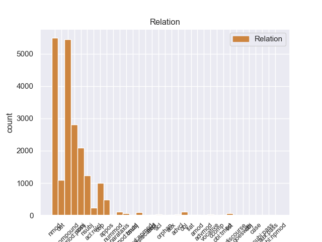
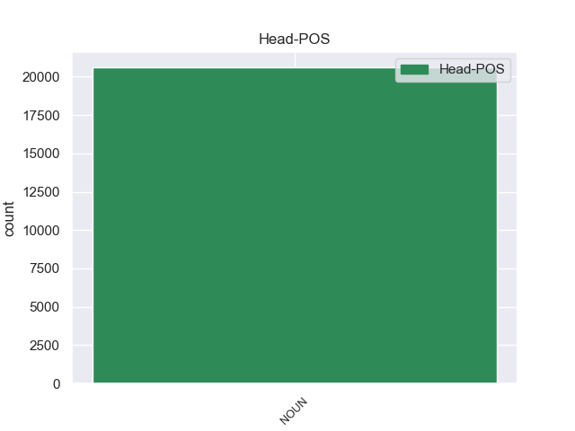
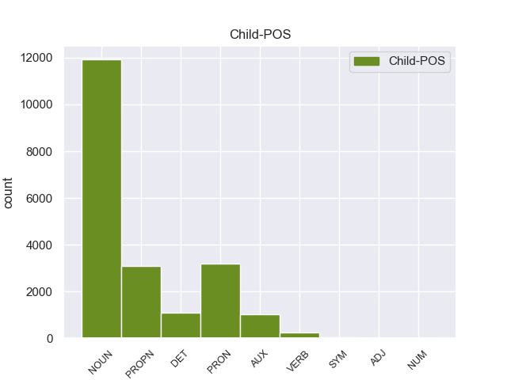

Distribution of features within this leaf



Agreement Rules sorted by frequency.
- When the dependent token is the compound(compound) of the head token, and the head token is NOUN and the dependent token is NOUN.
1 On _ _ _ _ 0 _ _ _
2 Monday _ _ _ _ 0 _ _ _
3 I _ _ _ _ 0 _ _ _
4 called _ _ _ _ 0 _ _ _
5 and _ _ _ _ 0 _ _ _
6 again _ _ _ _ 0 _ _ _
7 it _ _ _ _ 0 _ _ _
8 was _ _ _ _ 0 _ _ _
9 a _ _ _ _ 0 _ _ _
10 big _ _ _ _ 0 _ _ _
11 to to NOUN NN Number=Sing 13 compound 13:compound SpaceAfter=No
12 - _ _ _ _ 0 _ _ _
13 do do NOUN NN Number=Sing 0 _ _ _
14 to _ _ _ _ 0 _ _ _
15 find _ _ _ _ 0 _ _ _
16 anyone _ _ _ _ 0 _ _ _
17 who _ _ _ _ 0 _ _ _
18 knew _ _ _ _ 0 _ _ _
19 anything _ _ _ _ 0 _ _ _
20 about _ _ _ _ 0 _ _ _
21 it _ _ _ _ 0 _ _ _
22 . _ _ _ _ 0 _ _ _
1 I _ _ _ _ 0 _ _ _
2 will _ _ _ _ 0 _ _ _
3 never _ _ _ _ 0 _ _ _
4 return _ _ _ _ 0 _ _ _
5 there _ _ _ _ 0 _ _ _
6 again _ _ _ _ 0 _ _ _
7 ( _ _ _ _ 0 _ _ _
8 and _ _ _ _ 0 _ _ _
9 now _ _ _ _ 0 _ _ _
10 have _ _ _ _ 0 _ _ _
11 some _ _ _ _ 0 _ _ _
12 serious _ _ _ _ 0 _ _ _
13 doubts _ _ _ _ 0 _ _ _
14 about _ _ _ _ 0 _ _ _
15 the _ _ _ _ 0 _ _ _
16 quality quality NOUN NN Number=Sing 0 _ _ _
17 of _ _ _ _ 0 _ _ _
18 work work NOUN NN Number=Sing 16 nmod 16:nmod:of _
19 they _ _ _ _ 0 _ _ _
20 actually _ _ _ _ 0 _ _ _
21 performed _ _ _ _ 0 _ _ _
22 on _ _ _ _ 0 _ _ _
23 my _ _ _ _ 0 _ _ _
24 car _ _ _ _ 0 _ _ _
25 ) _ _ _ _ 0 _ _ _
26 . _ _ _ _ 0 _ _ _
1 However _ _ _ _ 0 _ _ _
2 , _ _ _ _ 0 _ _ _
3 when _ _ _ _ 0 _ _ _
4 he _ _ _ _ 0 _ _ _
5 printed _ _ _ _ 0 _ _ _
6 out _ _ _ _ 0 _ _ _
7 the _ _ _ _ 0 _ _ _
8 service _ _ _ _ 0 _ _ _
9 quote _ _ _ _ 0 _ _ _
10 , _ _ _ _ 0 _ _ _
11 I _ _ _ _ 0 _ _ _
12 could _ _ _ _ 0 _ _ _
13 see _ _ _ _ 0 _ _ _
14 that _ _ _ _ 0 _ _ _
15 it _ _ _ _ 0 _ _ _
16 was _ _ _ _ 0 _ _ _
17 NOT _ _ _ _ 0 _ _ _
18 the _ _ _ _ 0 _ _ _
19 correct _ _ _ _ 0 _ _ _
20 tire tire NOUN NN Number=Sing 0 _ _ _
21 , _ _ _ _ 0 _ _ _
22 and _ _ _ _ 0 _ _ _
23 was _ _ _ _ 0 _ _ _
24 not _ _ _ _ 0 _ _ _
25 even _ _ _ _ 0 _ _ _
26 an _ _ _ _ 0 _ _ _
27 appropriate _ _ _ _ 0 _ _ _
28 tire tire NOUN NN Number=Sing 20 conj 13:ccomp|20:conj:and _
29 for _ _ _ _ 0 _ _ _
30 my _ _ _ _ 0 _ _ _
31 car _ _ _ _ 0 _ _ _
32 model _ _ _ _ 0 _ _ _
33 . _ _ _ _ 0 _ _ _
1 I _ _ _ _ 0 _ _ _
2 will _ _ _ _ 0 _ _ _
3 never _ _ _ _ 0 _ _ _
4 return _ _ _ _ 0 _ _ _
5 there _ _ _ _ 0 _ _ _
6 again _ _ _ _ 0 _ _ _
7 ( _ _ _ _ 0 _ _ _
8 and _ _ _ _ 0 _ _ _
9 now _ _ _ _ 0 _ _ _
10 have _ _ _ _ 0 _ _ _
11 some _ _ _ _ 0 _ _ _
12 serious _ _ _ _ 0 _ _ _
13 doubts _ _ _ _ 0 _ _ _
14 about _ _ _ _ 0 _ _ _
15 the _ _ _ _ 0 _ _ _
16 quality _ _ _ _ 0 _ _ _
17 of _ _ _ _ 0 _ _ _
18 work _ _ _ _ 0 _ _ _
19 they _ _ _ _ 0 _ _ _
20 actually _ _ _ _ 0 _ _ _
21 performed _ _ _ _ 0 _ _ _
22 on _ _ _ _ 0 _ _ _
23 my my PRON PRP$ Number=Sing|Person=1|Poss=Yes|PronType=Prs 24 nmod:poss 24:nmod:poss _
24 car car NOUN NN Number=Sing 0 _ _ _
25 ) _ _ _ _ 0 _ _ _
26 . _ _ _ _ 0 _ _ _
1 Supposedly _ _ _ _ 0 _ _ _
2 they _ _ _ _ 0 _ _ _
3 will _ _ _ _ 0 _ _ _
4 be _ _ _ _ 0 _ _ _
5 holding _ _ _ _ 0 _ _ _
6 it _ _ _ _ 0 _ _ _
7 for _ _ _ _ 0 _ _ _
8 me _ _ _ _ 0 _ _ _
9 this this DET DT Number=Sing|PronType=Dem 10 det 10:det _
10 evening evening NOUN NN Number=Sing 0 _ _ _
11 , _ _ _ _ 0 _ _ _
12 but _ _ _ _ 0 _ _ _
13 I _ _ _ _ 0 _ _ _
14 'm _ _ _ _ 0 _ _ _
15 sure _ _ _ _ 0 _ _ _
16 that _ _ _ _ 0 _ _ _
17 will _ _ _ _ 0 _ _ _
18 also _ _ _ _ 0 _ _ _
19 be _ _ _ _ 0 _ _ _
20 a _ _ _ _ 0 _ _ _
21 huge _ _ _ _ 0 _ _ _
22 ordeal _ _ _ _ 0 _ _ _
23 . _ _ _ _ 0 _ _ _
1 On _ _ _ _ 0 _ _ _
2 Monday _ _ _ _ 0 _ _ _
3 I _ _ _ _ 0 _ _ _
4 called _ _ _ _ 0 _ _ _
5 and _ _ _ _ 0 _ _ _
6 again _ _ _ _ 0 _ _ _
7 it _ _ _ _ 0 _ _ _
8 was be AUX VBD Mood=Ind|Number=Sing|Person=3|Tense=Past|VerbForm=Fin 13 cop 13:cop _
9 a _ _ _ _ 0 _ _ _
10 big _ _ _ _ 0 _ _ _
11 to _ _ _ _ 0 _ _ _
12 - _ _ _ _ 0 _ _ _
13 do do NOUN NN Number=Sing 0 _ _ _
14 to _ _ _ _ 0 _ _ _
15 find _ _ _ _ 0 _ _ _
16 anyone _ _ _ _ 0 _ _ _
17 who _ _ _ _ 0 _ _ _
18 knew _ _ _ _ 0 _ _ _
19 anything _ _ _ _ 0 _ _ _
20 about _ _ _ _ 0 _ _ _
21 it _ _ _ _ 0 _ _ _
22 . _ _ _ _ 0 _ _ _
1 The _ _ _ _ 0 _ _ _
2 worst _ _ _ _ 0 _ _ _
3 thing _ _ _ _ 0 _ _ _
4 that _ _ _ _ 0 _ _ _
5 can _ _ _ _ 0 _ _ _
6 happen _ _ _ _ 0 _ _ _
7 for _ _ _ _ 0 _ _ _
8 any _ _ _ _ 0 _ _ _
9 restaurant restaurant NOUN NN Number=Sing 0 _ _ _
10 like _ _ _ _ 0 _ _ _
11 Zahav Zahav PROPN NNP Number=Sing 9 nmod 9:nmod:like _
12 is _ _ _ _ 0 _ _ _
13 to _ _ _ _ 0 _ _ _
14 have _ _ _ _ 0 _ _ _
15 too _ _ _ _ 0 _ _ _
16 many _ _ _ _ 0 _ _ _
17 people _ _ _ _ 0 _ _ _
18 write _ _ _ _ 0 _ _ _
19 hyperbolic _ _ _ _ 0 _ _ _
20 reviews _ _ _ _ 0 _ _ _
21 making _ _ _ _ 0 _ _ _
22 claims _ _ _ _ 0 _ _ _
23 that _ _ _ _ 0 _ _ _
24 " _ _ _ _ 0 _ _ _
25 everyone _ _ _ _ 0 _ _ _
26 " _ _ _ _ 0 _ _ _
27 is _ _ _ _ 0 _ _ _
28 going _ _ _ _ 0 _ _ _
29 to _ _ _ _ 0 _ _ _
30 " _ _ _ _ 0 _ _ _
31 love _ _ _ _ 0 _ _ _
32 " _ _ _ _ 0 _ _ _
33 the _ _ _ _ 0 _ _ _
34 food _ _ _ _ 0 _ _ _
35 , _ _ _ _ 0 _ _ _
36 decor _ _ _ _ 0 _ _ _
37 and _ _ _ _ 0 _ _ _
38 service _ _ _ _ 0 _ _ _
39 . _ _ _ _ 0 _ _ _
1 After _ _ _ _ 0 _ _ _
2 happily _ _ _ _ 0 _ _ _
3 visiting _ _ _ _ 0 _ _ _
4 Sear's _ _ _ _ 0 _ _ _
5 Automotives _ _ _ _ 0 _ _ _
6 in _ _ _ _ 0 _ _ _
7 the _ _ _ _ 0 _ _ _
8 past _ _ _ _ 0 _ _ _
9 , _ _ _ _ 0 _ _ _
10 I _ _ _ _ 0 _ _ _
11 was _ _ _ _ 0 _ _ _
12 shocked _ _ _ _ 0 _ _ _
13 at _ _ _ _ 0 _ _ _
14 the _ _ _ _ 0 _ _ _
15 horrible _ _ _ _ 0 _ _ _
16 service _ _ _ _ 0 _ _ _
17 received _ _ _ _ 0 _ _ _
18 at _ _ _ _ 0 _ _ _
19 their _ _ _ _ 0 _ _ _
20 Greensboro Greensboro PROPN NNP Number=Sing 21 compound 21:compound _
21 location location NOUN NN Number=Sing 0 _ _ _
22 . _ _ _ _ 0 _ _ _
1 Supposedly _ _ _ _ 0 _ _ _
2 they _ _ _ _ 0 _ _ _
3 will _ _ _ _ 0 _ _ _
4 be _ _ _ _ 0 _ _ _
5 holding _ _ _ _ 0 _ _ _
6 it _ _ _ _ 0 _ _ _
7 for _ _ _ _ 0 _ _ _
8 me _ _ _ _ 0 _ _ _
9 this _ _ _ _ 0 _ _ _
10 evening _ _ _ _ 0 _ _ _
11 , _ _ _ _ 0 _ _ _
12 but _ _ _ _ 0 _ _ _
13 I _ _ _ _ 0 _ _ _
14 'm _ _ _ _ 0 _ _ _
15 sure _ _ _ _ 0 _ _ _
16 that that PRON DT Number=Sing|PronType=Dem 22 nsubj 22:nsubj _
17 will _ _ _ _ 0 _ _ _
18 also _ _ _ _ 0 _ _ _
19 be _ _ _ _ 0 _ _ _
20 a _ _ _ _ 0 _ _ _
21 huge _ _ _ _ 0 _ _ _
22 ordeal ordeal NOUN NN Number=Sing 0 _ _ _
23 . _ _ _ _ 0 _ _ _
1 The _ _ _ _ 0 _ _ _
2 duck duck NOUN NN Number=Sing 7 nsubj 7:nsubj _
3 was _ _ _ _ 0 _ _ _
4 a _ _ _ _ 0 _ _ _
5 65 _ _ _ _ 0 _ _ _
6 % _ _ _ _ 0 _ _ _
7 glob glob NOUN NN Number=Sing 0 _ _ _
8 of _ _ _ _ 0 _ _ _
9 chewy _ _ _ _ 0 _ _ _
10 fat _ _ _ _ 0 _ _ _
11 with _ _ _ _ 0 _ _ _
12 no _ _ _ _ 0 _ _ _
13 resemblance _ _ _ _ 0 _ _ _
14 to _ _ _ _ 0 _ _ _
15 the _ _ _ _ 0 _ _ _
16 juicy _ _ _ _ 0 _ _ _
17 , _ _ _ _ 0 _ _ _
18 crispy _ _ _ _ 0 _ _ _
19 delicacy _ _ _ _ 0 _ _ _
20 it _ _ _ _ 0 _ _ _
21 usually _ _ _ _ 0 _ _ _
22 represents _ _ _ _ 0 _ _ _
23 at _ _ _ _ 0 _ _ _
24 other _ _ _ _ 0 _ _ _
25 establishments _ _ _ _ 0 _ _ _
26 . _ _ _ _ 0 _ _ _
1 January _ _ _ _ 0 _ _ _
2 15th _ _ _ _ 0 _ _ _
3 -- _ _ _ _ 0 _ _ _
4 We _ _ _ _ 0 _ _ _
5 were _ _ _ _ 0 _ _ _
6 signed _ _ _ _ 0 _ _ _
7 up _ _ _ _ 0 _ _ _
8 for _ _ _ _ 0 _ _ _
9 Saturday Saturday PROPN NNP Number=Sing 13 nmod:poss 13:nmod:poss SpaceAfter=No
10 's _ _ _ _ 0 _ _ _
11 2 _ _ _ _ 0 _ _ _
12 PM _ _ _ _ 0 _ _ _
13 class class NOUN NN Number=Sing 0 _ _ _
14 " _ _ _ _ 0 _ _ _
15 Beginning _ _ _ _ 0 _ _ _
16 Yoga _ _ _ _ 0 _ _ _
17 with _ _ _ _ 0 _ _ _
18 Brittany _ _ _ _ 0 _ _ _
19 . _ _ _ _ 0 _ _ _
20 " _ _ _ _ 0 _ _ _
1 The _ _ _ _ 0 _ _ _
2 staff staff NOUN NN Number=Sing 0 _ _ _
3 was _ _ _ _ 0 _ _ _
4 friendly _ _ _ _ 0 _ _ _
5 , _ _ _ _ 0 _ _ _
6 especially _ _ _ _ 0 _ _ _
7 the _ _ _ _ 0 _ _ _
8 front _ _ _ _ 0 _ _ _
9 desk _ _ _ _ 0 _ _ _
10 female _ _ _ _ 0 _ _ _
11 supervisor supervisor NOUN NN Number=Sing 2 appos 2:appos SpaceAfter=No
12 , _ _ _ _ 0 _ _ _
13 and _ _ _ _ 0 _ _ _
14 seemed _ _ _ _ 0 _ _ _
15 to _ _ _ _ 0 _ _ _
16 want _ _ _ _ 0 _ _ _
17 to _ _ _ _ 0 _ _ _
18 help _ _ _ _ 0 _ _ _
19 , _ _ _ _ 0 _ _ _
20 but _ _ _ _ 0 _ _ _
21 too _ _ _ _ 0 _ _ _
22 many _ _ _ _ 0 _ _ _
23 unusual _ _ _ _ 0 _ _ _
24 things _ _ _ _ 0 _ _ _
25 happened _ _ _ _ 0 _ _ _
26 to _ _ _ _ 0 _ _ _
27 make _ _ _ _ 0 _ _ _
28 us _ _ _ _ 0 _ _ _
29 want _ _ _ _ 0 _ _ _
30 to _ _ _ _ 0 _ _ _
31 stay _ _ _ _ 0 _ _ _
32 there _ _ _ _ 0 _ _ _
33 again _ _ _ _ 0 _ _ _
34 . _ _ _ _ 0 _ _ _
1 The _ _ _ _ 0 _ _ _
2 guy guy NOUN NN Number=Sing 0 _ _ _
3 who _ _ _ _ 0 _ _ _
4 was _ _ _ _ 0 _ _ _
5 cutting _ _ _ _ 0 _ _ _
6 me _ _ _ _ 0 _ _ _
7 the _ _ _ _ 0 _ _ _
8 deals _ _ _ _ 0 _ _ _
9 and _ _ _ _ 0 _ _ _
10 getting _ _ _ _ 0 _ _ _
11 me _ _ _ _ 0 _ _ _
12 the _ _ _ _ 0 _ _ _
13 furniture _ _ _ _ 0 _ _ _
14 quickly _ _ _ _ 0 _ _ _
15 , _ _ _ _ 0 _ _ _
16 Ahmed Ahmed PROPN NNP Number=Sing 2 appos 2:appos SpaceAfter=No
17 , _ _ _ _ 0 _ _ _
18 was _ _ _ _ 0 _ _ _
19 nice _ _ _ _ 0 _ _ _
20 and _ _ _ _ 0 _ _ _
21 mostly _ _ _ _ 0 _ _ _
22 professional _ _ _ _ 0 _ _ _
23 , _ _ _ _ 0 _ _ _
24 except _ _ _ _ 0 _ _ _
25 the _ _ _ _ 0 _ _ _
26 semi-sketchiness _ _ _ _ 0 _ _ _
27 . _ _ _ _ 0 _ _ _
1 Of _ _ _ _ 0 _ _ _
2 course _ _ _ _ 0 _ _ _
3 , _ _ _ _ 0 _ _ _
4 they _ _ _ _ 0 _ _ _
5 could _ _ _ _ 0 _ _ _
6 n't _ _ _ _ 0 _ _ _
7 call _ _ _ _ 0 _ _ _
8 him _ _ _ _ 0 _ _ _
9 either _ _ _ _ 0 _ _ _
10 to _ _ _ _ 0 _ _ _
11 ask _ _ _ _ 0 _ _ _
12 about _ _ _ _ 0 _ _ _
13 it _ _ _ _ 0 _ _ _
14 because _ _ _ _ 0 _ _ _
15 apparently _ _ _ _ 0 _ _ _
16 they _ _ _ _ 0 _ _ _
17 do _ _ _ _ 0 _ _ _
18 n't _ _ _ _ 0 _ _ _
19 keep _ _ _ _ 0 _ _ _
20 their _ _ _ _ 0 _ _ _
21 employees employee NOUN NNS Number=Plur 24 nmod:poss 24:nmod:poss SpaceAfter=No
22 ' _ _ _ _ 0 _ _ _
23 phone _ _ _ _ 0 _ _ _
24 numbers number NOUN NNS Number=Plur 0 _ _ _
25 ( _ _ _ _ 0 _ _ _
26 riiight _ _ _ _ 0 _ _ _
27 ) _ _ _ _ 0 _ _ _
28 , _ _ _ _ 0 _ _ _
29 so _ _ _ _ 0 _ _ _
30 I _ _ _ _ 0 _ _ _
31 would _ _ _ _ 0 _ _ _
32 have _ _ _ _ 0 _ _ _
33 to _ _ _ _ 0 _ _ _
34 return _ _ _ _ 0 _ _ _
35 on _ _ _ _ 0 _ _ _
36 Monday _ _ _ _ 0 _ _ _
37 ( _ _ _ _ 0 _ _ _
38 driving _ _ _ _ 0 _ _ _
39 for _ _ _ _ 0 _ _ _
40 3 _ _ _ _ 0 _ _ _
41 days _ _ _ _ 0 _ _ _
42 now _ _ _ _ 0 _ _ _
43 with _ _ _ _ 0 _ _ _
44 no _ _ _ _ 0 _ _ _
45 wheel _ _ _ _ 0 _ _ _
46 lock _ _ _ _ 0 _ _ _
47 should _ _ _ _ 0 _ _ _
48 I _ _ _ _ 0 _ _ _
49 get _ _ _ _ 0 _ _ _
50 a _ _ _ _ 0 _ _ _
51 flat _ _ _ _ 0 _ _ _
52 ) _ _ _ _ 0 _ _ _
53 . _ _ _ _ 0 _ _ _
1 The _ _ _ _ 0 _ _ _
2 duck _ _ _ _ 0 _ _ _
3 was _ _ _ _ 0 _ _ _
4 a _ _ _ _ 0 _ _ _
5 65 _ _ _ _ 0 _ _ _
6 % _ _ _ _ 0 _ _ _
7 glob _ _ _ _ 0 _ _ _
8 of _ _ _ _ 0 _ _ _
9 chewy _ _ _ _ 0 _ _ _
10 fat _ _ _ _ 0 _ _ _
11 with _ _ _ _ 0 _ _ _
12 no _ _ _ _ 0 _ _ _
13 resemblance _ _ _ _ 0 _ _ _
14 to _ _ _ _ 0 _ _ _
15 the _ _ _ _ 0 _ _ _
16 juicy _ _ _ _ 0 _ _ _
17 , _ _ _ _ 0 _ _ _
18 crispy _ _ _ _ 0 _ _ _
19 delicacy delicacy NOUN NN Number=Sing 0 _ _ _
20 it _ _ _ _ 0 _ _ _
21 usually _ _ _ _ 0 _ _ _
22 represents represent VERB VBZ Mood=Ind|Number=Sing|Person=3|Tense=Pres|VerbForm=Fin 19 acl:relcl 19:acl:relcl _
23 at _ _ _ _ 0 _ _ _
24 other _ _ _ _ 0 _ _ _
25 establishments _ _ _ _ 0 _ _ _
26 . _ _ _ _ 0 _ _ _
1 and _ _ _ _ 0 _ _ _
2 I _ _ _ _ 0 _ _ _
3 said _ _ _ _ 0 _ _ _
4 , _ _ _ _ 0 _ _ _
5 YES _ _ _ _ 0 _ _ _
6 , _ _ _ _ 0 _ _ _
7 CENTER _ _ _ _ 0 _ _ _
8 CITY _ _ _ _ 0 _ _ _
9 PHILLY _ _ _ _ 0 _ _ _
10 , _ _ _ _ 0 _ _ _
11 and _ _ _ _ 0 _ _ _
12 he _ _ _ _ 0 _ _ _
13 says _ _ _ _ 0 _ _ _
14 , _ _ _ _ 0 _ _ _
15 NO _ _ _ _ 0 _ _ _
16 , _ _ _ _ 0 _ _ _
17 Warwick Warwick PROPN NNP Number=Sing 20 nsubj 20:nsubj _
18 is _ _ _ _ 0 _ _ _
19 a _ _ _ _ 0 _ _ _
20 township township NOUN NN Number=Sing 0 _ _ _
21 , _ _ _ _ 0 _ _ _
22 If _ _ _ _ 0 _ _ _
23 you _ _ _ _ 0 _ _ _
24 're _ _ _ _ 0 _ _ _
25 at _ _ _ _ 0 _ _ _
26 a _ _ _ _ 0 _ _ _
27 Radison _ _ _ _ 0 _ _ _
28 in _ _ _ _ 0 _ _ _
29 Warwick _ _ _ _ 0 _ _ _
30 that _ _ _ _ 0 _ _ _
31 s _ _ _ _ 0 _ _ _
32 too _ _ _ _ 0 _ _ _
33 far _ _ _ _ 0 _ _ _
34 , _ _ _ _ 0 _ _ _
35 try _ _ _ _ 0 _ _ _
36 dominos _ _ _ _ 0 _ _ _
37 in _ _ _ _ 0 _ _ _
38 Pottstown _ _ _ _ 0 _ _ _
39 . _ _ _ _ 0 _ _ _
1 The _ _ _ _ 0 _ _ _
2 salatim _ _ _ _ 0 _ _ _
3 salads _ _ _ _ 0 _ _ _
4 are _ _ _ _ 0 _ _ _
5 the _ _ _ _ 0 _ _ _
6 smallest _ _ _ _ 0 _ _ _
7 plates _ _ _ _ 0 _ _ _
8 I _ _ _ _ 0 _ _ _
9 've _ _ _ _ 0 _ _ _
10 ever _ _ _ _ 0 _ _ _
11 seen _ _ _ _ 0 _ _ _
12 placed _ _ _ _ 0 _ _ _
13 in _ _ _ _ 0 _ _ _
14 front front NOUN NN Number=Sing 0 _ _ _
15 of _ _ _ _ 0 _ _ _
16 me I PRON PRP Case=Acc|Number=Sing|Person=1|PronType=Prs 14 nmod 14:nmod:of _
17 ( _ _ _ _ 0 _ _ _
18 you _ _ _ _ 0 _ _ _
19 would _ _ _ _ 0 _ _ _
20 most _ _ _ _ 0 _ _ _
21 likely _ _ _ _ 0 _ _ _
22 think _ _ _ _ 0 _ _ _
23 they _ _ _ _ 0 _ _ _
24 were _ _ _ _ 0 _ _ _
25 condiments _ _ _ _ 0 _ _ _
26 if _ _ _ _ 0 _ _ _
27 it _ _ _ _ 0 _ _ _
28 were _ _ _ _ 0 _ _ _
29 n't _ _ _ _ 0 _ _ _
30 explained _ _ _ _ 0 _ _ _
31 to _ _ _ _ 0 _ _ _
32 you _ _ _ _ 0 _ _ _
33 ) _ _ _ _ 0 _ _ _
34 . _ _ _ _ 0 _ _ _
1 # _ _ _ _ 0 _ _ _
2 ) _ _ _ _ 0 _ _ _
3 If _ _ _ _ 0 _ _ _
4 you _ _ _ _ 0 _ _ _
5 want _ _ _ _ 0 _ _ _
6 a _ _ _ _ 0 _ _ _
7 late _ _ _ _ 0 _ _ _
8 checkout _ _ _ _ 0 _ _ _
9 , _ _ _ _ 0 _ _ _
10 ( _ _ _ _ 0 _ _ _
11 after _ _ _ _ 0 _ _ _
12 11 _ _ _ _ 0 _ _ _
13 AM _ _ _ _ 0 _ _ _
14 ) _ _ _ _ 0 _ _ _
15 they _ _ _ _ 0 _ _ _
16 charge _ _ _ _ 0 _ _ _
17 you _ _ _ _ 0 _ _ _
18 $ _ _ _ _ 0 _ _ _
19 15 _ _ _ _ 0 _ _ _
20 for _ _ _ _ 0 _ _ _
21 the _ _ _ _ 0 _ _ _
22 first _ _ _ _ 0 _ _ _
23 hour _ _ _ _ 0 _ _ _
24 , _ _ _ _ 0 _ _ _
24.1 charge _ _ _ _ 0 _ _ _
25 $ _ _ _ _ 0 _ _ _
26 25 _ _ _ _ 0 _ _ _
27 for _ _ _ _ 0 _ _ _
28 the _ _ _ _ 0 _ _ _
29 second _ _ _ _ 0 _ _ _
30 hour _ _ _ _ 0 _ _ _
31 , _ _ _ _ 0 _ _ _
32 and _ _ _ _ 0 _ _ _
33 after _ _ _ _ 0 _ _ _
34 2 _ _ _ _ 0 _ _ _
35 PM pm NOUN NN Number=Sing 41 obl 41:obl:after _
36 it _ _ _ _ 0 _ _ _
37 's _ _ _ _ 0 _ _ _
38 a _ _ _ _ 0 _ _ _
39 full _ _ _ _ 0 _ _ _
40 day _ _ _ _ 0 _ _ _
41 charge charge NOUN NN Number=Sing 0 _ _ _
42 . _ _ _ _ 0 _ _ _
1 Our _ _ _ _ 0 _ _ _
2 company _ _ _ _ 0 _ _ _
3 is _ _ _ _ 0 _ _ _
4 a _ _ _ _ 0 _ _ _
5 high _ _ _ _ 0 _ _ _
6 end _ _ _ _ 0 _ _ _
7 designer _ _ _ _ 0 _ _ _
8 handbag _ _ _ _ 0 _ _ _
9 and _ _ _ _ 0 _ _ _
10 fashion _ _ _ _ 0 _ _ _
11 accessories _ _ _ _ 0 _ _ _
12 company company NOUN NN Number=Sing 0 _ _ _
13 , _ _ _ _ 0 _ _ _
14 thus _ _ _ _ 0 _ _ _
15 we _ _ _ _ 0 _ _ _
16 are _ _ _ _ 0 _ _ _
17 certainly _ _ _ _ 0 _ _ _
18 a _ _ _ _ 0 _ _ _
19 niche _ _ _ _ 0 _ _ _
20 market market NOUN NN Number=Sing 12 parataxis 12:parataxis SpaceAfter=No
21 . _ _ _ _ 0 _ _ _
1 I _ _ _ _ 0 _ _ _
2 just _ _ _ _ 0 _ _ _
3 called _ _ _ _ 0 _ _ _
4 again _ _ _ _ 0 _ _ _
5 and _ _ _ _ 0 _ _ _
6 was _ _ _ _ 0 _ _ _
7 told _ _ _ _ 0 _ _ _
8 that _ _ _ _ 0 _ _ _
9 workmanship _ _ _ _ 0 _ _ _
10 , _ _ _ _ 0 _ _ _
11 not _ _ _ _ 0 _ _ _
12 wood _ _ _ _ 0 _ _ _
13 , _ _ _ _ 0 _ _ _
14 is _ _ _ _ 0 _ _ _
15 guaranteed _ _ _ _ 0 _ _ _
16 for _ _ _ _ 0 _ _ _
17 a _ _ _ _ 0 _ _ _
18 year _ _ _ _ 0 _ _ _
19 - _ _ _ _ 0 _ _ _
20 well _ _ _ _ 0 _ _ _
21 in _ _ _ _ 0 _ _ _
22 my _ _ _ _ 0 _ _ _
23 opinion _ _ _ _ 0 _ _ _
24 - _ _ _ _ 0 _ _ _
25 the _ _ _ _ 0 _ _ _
26 wood _ _ _ _ 0 _ _ _
27 split _ _ _ _ 0 _ _ _
28 due _ _ _ _ 0 _ _ _
29 to _ _ _ _ 0 _ _ _
30 a _ _ _ _ 0 _ _ _
31 nail nail NOUN NN Number=Sing 0 _ _ _
32 which _ _ _ _ 0 _ _ _
33 is _ _ _ _ 0 _ _ _
34 part part NOUN NN Number=Sing 31 acl:relcl 31:acl:relcl _
35 of _ _ _ _ 0 _ _ _
36 workmanship _ _ _ _ 0 _ _ _
37 ! _ _ _ _ 0 _ _ _
1 A _ _ _ _ 0 _ _ _
2 great _ _ _ _ 0 _ _ _
3 breakfast breakfast NOUN NN Number=Sing 0 _ _ _
4 which _ _ _ _ 0 _ _ _
5 was _ _ _ _ 0 _ _ _
6 included _ _ _ _ 0 _ _ _
7 every _ _ _ _ 0 _ _ _
8 morning morning NOUN NN Number=Sing 3 nmod:tmod 3:nmod:tmod _
9 until _ _ _ _ 0 _ _ _
10 9:30 _ _ _ _ 0 _ _ _
11 am _ _ _ _ 0 _ _ _
12 ; _ _ _ _ 0 _ _ _
13 yummy _ _ _ _ 0 _ _ _
14 fresh _ _ _ _ 0 _ _ _
15 Parisian _ _ _ _ 0 _ _ _
16 croissants _ _ _ _ 0 _ _ _
17 . _ _ _ _ 0 _ _ _
1 My _ _ _ _ 0 _ _ _
2 family family NOUN NN Number=Sing 0 _ _ _
3 and _ _ _ _ 0 _ _ _
4 I I PRON PRP Case=Nom|Number=Sing|Person=1|PronType=Prs 2 conj 2:conj:and|5:nsubj _
5 moved _ _ _ _ 0 _ _ _
6 to _ _ _ _ 0 _ _ _
7 San _ _ _ _ 0 _ _ _
8 Antonio _ _ _ _ 0 _ _ _
9 a _ _ _ _ 0 _ _ _
10 year _ _ _ _ 0 _ _ _
11 ago _ _ _ _ 0 _ _ _
12 and _ _ _ _ 0 _ _ _
13 have _ _ _ _ 0 _ _ _
14 tried _ _ _ _ 0 _ _ _
15 almost _ _ _ _ 0 _ _ _
16 all _ _ _ _ 0 _ _ _
17 of _ _ _ _ 0 _ _ _
18 the _ _ _ _ 0 _ _ _
19 Chinese _ _ _ _ 0 _ _ _
20 Restaurants _ _ _ _ 0 _ _ _
21 because _ _ _ _ 0 _ _ _
22 we _ _ _ _ 0 _ _ _
23 love _ _ _ _ 0 _ _ _
24 Chinese _ _ _ _ 0 _ _ _
25 food _ _ _ _ 0 _ _ _
26 . _ _ _ _ 0 _ _ _
1 Long _ _ _ _ 0 _ _ _
2 Lines line NOUN NNS Number=Plur 0 _ _ _
3 , _ _ _ _ 0 _ _ _
4 Silly _ _ _ _ 0 _ _ _
5 Rules rule NOUN NNS Number=Plur 2 list 2:list SpaceAfter=No
6 , _ _ _ _ 0 _ _ _
7 Rude _ _ _ _ 0 _ _ _
8 Staff _ _ _ _ 0 _ _ _
9 , _ _ _ _ 0 _ _ _
10 Ok _ _ _ _ 0 _ _ _
11 Food _ _ _ _ 0 _ _ _
1 Also _ _ _ _ 0 _ _ _
2 , _ _ _ _ 0 _ _ _
3 a _ _ _ _ 0 _ _ _
4 week week NOUN NN Number=Sing 7 nmod:npmod 7:nmod:npmod _
5 after _ _ _ _ 0 _ _ _
6 the _ _ _ _ 0 _ _ _
7 work work NOUN NN Number=Sing 0 _ _ _
8 , _ _ _ _ 0 _ _ _
9 Phet _ _ _ _ 0 _ _ _
10 called _ _ _ _ 0 _ _ _
11 me _ _ _ _ 0 _ _ _
12 up _ _ _ _ 0 _ _ _
13 to _ _ _ _ 0 _ _ _
14 see _ _ _ _ 0 _ _ _
15 how _ _ _ _ 0 _ _ _
16 my _ _ _ _ 0 _ _ _
17 car _ _ _ _ 0 _ _ _
18 was _ _ _ _ 0 _ _ _
19 running _ _ _ _ 0 _ _ _
20 and _ _ _ _ 0 _ _ _
21 to _ _ _ _ 0 _ _ _
22 let _ _ _ _ 0 _ _ _
23 me _ _ _ _ 0 _ _ _
24 know _ _ _ _ 0 _ _ _
25 that _ _ _ _ 0 _ _ _
26 they _ _ _ _ 0 _ _ _
27 had _ _ _ _ 0 _ _ _
28 accidentally _ _ _ _ 0 _ _ _
29 overcharged _ _ _ _ 0 _ _ _
30 me _ _ _ _ 0 _ _ _
31 for _ _ _ _ 0 _ _ _
32 part _ _ _ _ 0 _ _ _
33 of _ _ _ _ 0 _ _ _
34 the _ _ _ _ 0 _ _ _
35 work _ _ _ _ 0 _ _ _
36 and _ _ _ _ 0 _ _ _
37 wanted _ _ _ _ 0 _ _ _
38 to _ _ _ _ 0 _ _ _
39 give _ _ _ _ 0 _ _ _
40 me _ _ _ _ 0 _ _ _
41 a _ _ _ _ 0 _ _ _
42 refund _ _ _ _ 0 _ _ _
43 for _ _ _ _ 0 _ _ _
44 that _ _ _ _ 0 _ _ _
45 amount _ _ _ _ 0 _ _ _
46 . _ _ _ _ 0 _ _ _
1 I _ _ _ _ 0 _ _ _
2 had _ _ _ _ 0 _ _ _
3 a _ _ _ _ 0 _ _ _
4 sampler _ _ _ _ 0 _ _ _
5 of _ _ _ _ 0 _ _ _
6 IPA ipa NOUN NN Number=Sing 0 _ _ _
7 , _ _ _ _ 0 _ _ _
8 Brawler _ _ _ _ 0 _ _ _
9 , _ _ _ _ 0 _ _ _
10 Love _ _ _ _ 0 _ _ _
11 Stout Stout PROPN NNP Number=Sing 6 conj 4:nmod:of|6:conj _
12 & _ _ _ _ 0 _ _ _
13 ESA _ _ _ _ 0 _ _ _
14 . _ _ _ _ 0 _ _ _
1 On _ _ _ _ 0 _ _ _
2 Monday _ _ _ _ 0 _ _ _
3 I _ _ _ _ 0 _ _ _
4 called _ _ _ _ 0 _ _ _
5 and _ _ _ _ 0 _ _ _
6 again _ _ _ _ 0 _ _ _
7 it it PRON PRP Case=Nom|Gender=Neut|Number=Sing|Person=3|PronType=Prs 13 expl 13:expl _
8 was _ _ _ _ 0 _ _ _
9 a _ _ _ _ 0 _ _ _
10 big _ _ _ _ 0 _ _ _
11 to _ _ _ _ 0 _ _ _
12 - _ _ _ _ 0 _ _ _
13 do do NOUN NN Number=Sing 0 _ _ _
14 to _ _ _ _ 0 _ _ _
15 find _ _ _ _ 0 _ _ _
16 anyone _ _ _ _ 0 _ _ _
17 who _ _ _ _ 0 _ _ _
18 knew _ _ _ _ 0 _ _ _
19 anything _ _ _ _ 0 _ _ _
20 about _ _ _ _ 0 _ _ _
21 it _ _ _ _ 0 _ _ _
22 . _ _ _ _ 0 _ _ _
1 So _ _ _ _ 0 _ _ _
2 I _ _ _ _ 0 _ _ _
3 kept _ _ _ _ 0 _ _ _
4 reading _ _ _ _ 0 _ _ _
5 and _ _ _ _ 0 _ _ _
6 then _ _ _ _ 0 _ _ _
7 I _ _ _ _ 0 _ _ _
8 saw _ _ _ _ 0 _ _ _
9 the _ _ _ _ 0 _ _ _
10 dates _ _ _ _ 0 _ _ _
11 , _ _ _ _ 0 _ _ _
12 it _ _ _ _ 0 _ _ _
13 was _ _ _ _ 0 _ _ _
14 from _ _ _ _ 0 _ _ _
15 mid _ _ _ _ 0 _ _ _
16 day day NOUN NN Number=Sing 0 _ _ _
17 Friday Friday PROPN NNP Number=Sing 16 nmod:tmod 16:nmod:tmod _
18 and _ _ _ _ 0 _ _ _
19 arriving _ _ _ _ 0 _ _ _
20 home _ _ _ _ 0 _ _ _
21 mid _ _ _ _ 0 _ _ _
22 day _ _ _ _ 0 _ _ _
23 monday _ _ _ _ 0 _ _ _
24 . _ _ _ _ 0 _ _ _
25 :( _ _ _ _ 0 _ _ _
1 Thanks thanks NOUN NN Number=Sing 0 _ _ _
2 Bud Bud PROPN NNP Number=Sing 1 vocative 1:vocative _
3 for _ _ _ _ 0 _ _ _
4 all _ _ _ _ 0 _ _ _
5 of _ _ _ _ 0 _ _ _
6 your _ _ _ _ 0 _ _ _
7 help _ _ _ _ 0 _ _ _
8 and _ _ _ _ 0 _ _ _
9 taking _ _ _ _ 0 _ _ _
10 time _ _ _ _ 0 _ _ _
11 away _ _ _ _ 0 _ _ _
12 from _ _ _ _ 0 _ _ _
13 your _ _ _ _ 0 _ _ _
14 family _ _ _ _ 0 _ _ _
15 that _ _ _ _ 0 _ _ _
16 evening _ _ _ _ 0 _ _ _
17 . _ _ _ _ 0 _ _ _
1 But _ _ _ _ 0 _ _ _
2 one _ _ _ _ 0 _ _ _
3 should _ _ _ _ 0 _ _ _
4 not _ _ _ _ 0 _ _ _
5 go _ _ _ _ 0 _ _ _
6 here _ _ _ _ 0 _ _ _
7 expecting _ _ _ _ 0 _ _ _
8 something _ _ _ _ 0 _ _ _
9 fantastic _ _ _ _ 0 _ _ _
10 , _ _ _ _ 0 _ _ _
11 unless _ _ _ _ 0 _ _ _
12 perhaps _ _ _ _ 0 _ _ _
13 you _ _ _ _ 0 _ _ _
14 've _ _ _ _ 0 _ _ _
15 never _ _ _ _ 0 _ _ _
16 had _ _ _ _ 0 _ _ _
17 middle _ _ _ _ 0 _ _ _
18 - _ _ _ _ 0 _ _ _
19 eastern _ _ _ _ 0 _ _ _
20 food _ _ _ _ 0 _ _ _
21 before _ _ _ _ 0 _ _ _
22 , _ _ _ _ 0 _ _ _
23 or _ _ _ _ 0 _ _ _
24 succulent _ _ _ _ 0 _ _ _
25 duck duck NOUN NN Number=Sing 0 _ _ _
26 , _ _ _ _ 0 _ _ _
27 tasty _ _ _ _ 0 _ _ _
28 lamb _ _ _ _ 0 _ _ _
29 , _ _ _ _ 0 _ _ _
30 decent _ _ _ _ 0 _ _ _
31 portion _ _ _ _ 0 _ _ _
32 sizes size VERB VBZ Mood=Ind|Number=Sing|Person=3|Tense=Pres|VerbForm=Fin 25 conj 25:conj _
33 or _ _ _ _ 0 _ _ _
34 actually _ _ _ _ 0 _ _ _
35 warm _ _ _ _ 0 _ _ _
36 chocolate _ _ _ _ 0 _ _ _
37 desserts _ _ _ _ 0 _ _ _
38 . _ _ _ _ 0 _ _ _
1 I _ _ _ _ 0 _ _ _
2 completely _ _ _ _ 0 _ _ _
3 enjoyed _ _ _ _ 0 _ _ _
4 my _ _ _ _ 0 _ _ _
5 whole _ _ _ _ 0 _ _ _
6 check _ _ _ _ 0 _ _ _
7 in _ _ _ _ 0 _ _ _
8 experience _ _ _ _ 0 _ _ _
9 and _ _ _ _ 0 _ _ _
10 was _ _ _ _ 0 _ _ _
11 impressed _ _ _ _ 0 _ _ _
12 with _ _ _ _ 0 _ _ _
13 the _ _ _ _ 0 _ _ _
14 friendliness _ _ _ _ 0 _ _ _
15 and _ _ _ _ 0 _ _ _
16 professionalism _ _ _ _ 0 _ _ _
17 of _ _ _ _ 0 _ _ _
18 the _ _ _ _ 0 _ _ _
19 staff _ _ _ _ 0 _ _ _
20 as _ _ _ _ 0 _ _ _
21 well _ _ _ _ 0 _ _ _
22 as _ _ _ _ 0 _ _ _
23 the _ _ _ _ 0 _ _ _
24 accommodations accommodation NOUN NNS Number=Plur 0 _ _ _
25 themselves themselves PRON PRP Number=Plur|Person=3|PronType=Prs 24 nmod:npmod 24:nmod:npmod SpaceAfter=No
26 . _ _ _ _ 0 _ _ _
1 Copyright copyright NOUN NN Number=Sing 0 _ _ _
2 2005 _ _ _ _ 0 _ _ _
3 Houston _ _ _ _ 0 _ _ _
4 Chronicle Chronicle PROPN NNP Number=Sing 1 nmod:npmod 1:nmod:npmod _
1 Brickell _ _ _ _ 0 _ _ _
2 Honda _ _ _ _ 0 _ _ _
3 has have AUX VBZ Mood=Ind|Number=Sing|Person=3|Tense=Pres|VerbForm=Fin 8 aux 8:aux _
4 been _ _ _ _ 0 _ _ _
5 the _ _ _ _ 0 _ _ _
6 best _ _ _ _ 0 _ _ _
7 buying _ _ _ _ 0 _ _ _
8 experience experience NOUN NN Number=Sing 0 _ _ _
9 in _ _ _ _ 0 _ _ _
10 the _ _ _ _ 0 _ _ _
11 world _ _ _ _ 0 _ _ _
12 . _ _ _ _ 0 _ _ _
1 Being _ _ _ _ 0 _ _ _
2 a _ _ _ _ 0 _ _ _
3 grocery _ _ _ _ 0 _ _ _
4 shop shop NOUN NN Number=Sing 13 advcl 13:advcl SpaceAfter=No
5 , _ _ _ _ 0 _ _ _
6 maintaining _ _ _ _ 0 _ _ _
7 5000 _ _ _ _ 0 _ _ _
8 different _ _ _ _ 0 _ _ _
9 products _ _ _ _ 0 _ _ _
10 was _ _ _ _ 0 _ _ _
11 a _ _ _ _ 0 _ _ _
12 challenging _ _ _ _ 0 _ _ _
13 job job NOUN NN Number=Sing 0 _ _ _
14 . _ _ _ _ 0 _ _ _
1 Without _ _ _ _ 0 _ _ _
2 George _ _ _ _ 0 _ _ _
3 Martin _ _ _ _ 0 _ _ _
4 the _ _ _ _ 0 _ _ _
5 Beatles _ _ _ _ 0 _ _ _
6 would _ _ _ _ 0 _ _ _
7 have _ _ _ _ 0 _ _ _
8 been _ _ _ _ 0 _ _ _
9 just _ _ _ _ 0 _ _ _
10 another _ _ _ _ 0 _ _ _
11 untalented _ _ _ _ 0 _ _ _
12 band band NOUN NN Number=Sing 0 _ _ _
13 as _ _ _ _ 0 _ _ _
14 Oasis Oasis PROPN NNP Number=Sing 12 obl 12:obl:as SpaceAfter=No
15 .... _ _ _ _ 0 _ _ _
1 Derrick _ _ _ _ 0 _ _ _
2 did _ _ _ _ 0 _ _ _
3 a _ _ _ _ 0 _ _ _
4 terrible _ _ _ _ 0 _ _ _
5 job _ _ _ _ 0 _ _ _
6 , _ _ _ _ 0 _ _ _
7 was _ _ _ _ 0 _ _ _
8 a _ _ _ _ 0 _ _ _
9 complete _ _ _ _ 0 _ _ _
10 jerk jerk NOUN NN Number=Sing 0 _ _ _
11 the _ _ _ _ 0 _ _ _
12 entire _ _ _ _ 0 _ _ _
13 time time NOUN NN Number=Sing 10 obl:tmod 10:obl:tmod SpaceAfter=No
14 , _ _ _ _ 0 _ _ _
15 and _ _ _ _ 0 _ _ _
16 I _ _ _ _ 0 _ _ _
17 had _ _ _ _ 0 _ _ _
18 no _ _ _ _ 0 _ _ _
19 warning _ _ _ _ 0 _ _ _
20 as _ _ _ _ 0 _ _ _
21 to _ _ _ _ 0 _ _ _
22 the _ _ _ _ 0 _ _ _
23 price _ _ _ _ 0 _ _ _
24 . _ _ _ _ 0 _ _ _
1 The _ _ _ _ 0 _ _ _
2 duck _ _ _ _ 0 _ _ _
3 was _ _ _ _ 0 _ _ _
4 a _ _ _ _ 0 _ _ _
5 65 _ _ _ _ 0 _ _ _
6 % % SYM NN Number=Sing 7 compound 7:compound _
7 glob glob NOUN NN Number=Sing 0 _ _ _
8 of _ _ _ _ 0 _ _ _
9 chewy _ _ _ _ 0 _ _ _
10 fat _ _ _ _ 0 _ _ _
11 with _ _ _ _ 0 _ _ _
12 no _ _ _ _ 0 _ _ _
13 resemblance _ _ _ _ 0 _ _ _
14 to _ _ _ _ 0 _ _ _
15 the _ _ _ _ 0 _ _ _
16 juicy _ _ _ _ 0 _ _ _
17 , _ _ _ _ 0 _ _ _
18 crispy _ _ _ _ 0 _ _ _
19 delicacy _ _ _ _ 0 _ _ _
20 it _ _ _ _ 0 _ _ _
21 usually _ _ _ _ 0 _ _ _
22 represents _ _ _ _ 0 _ _ _
23 at _ _ _ _ 0 _ _ _
24 other _ _ _ _ 0 _ _ _
25 establishments _ _ _ _ 0 _ _ _
26 . _ _ _ _ 0 _ _ _
1 Bottom _ _ _ _ 0 _ _ _
2 line _ _ _ _ 0 _ _ _
3 is _ _ _ _ 0 _ _ _
4 that _ _ _ _ 0 _ _ _
5 when _ _ _ _ 0 _ _ _
6 it _ _ _ _ 0 _ _ _
7 's _ _ _ _ 0 _ _ _
8 a _ _ _ _ 0 _ _ _
9 small _ _ _ _ 0 _ _ _
10 privatly _ _ _ _ 0 _ _ _
11 owned _ _ _ _ 0 _ _ _
12 resturant resturant NOUN NN Number=Sing 0 _ _ _
13 like _ _ _ _ 0 _ _ _
14 this _ _ _ _ 0 _ _ _
15 is be VERB VBZ Mood=Ind|Number=Sing|Person=3|Tense=Pres|VerbForm=Fin 12 advcl 12:advcl:like _
16 you _ _ _ _ 0 _ _ _
17 can _ _ _ _ 0 _ _ _
18 tell _ _ _ _ 0 _ _ _
19 that _ _ _ _ 0 _ _ _
20 the _ _ _ _ 0 _ _ _
21 owners _ _ _ _ 0 _ _ _
22 and _ _ _ _ 0 _ _ _
23 employees _ _ _ _ 0 _ _ _
24 take _ _ _ _ 0 _ _ _
25 pride _ _ _ _ 0 _ _ _
26 in _ _ _ _ 0 _ _ _
27 their _ _ _ _ 0 _ _ _
28 product _ _ _ _ 0 _ _ _
29 and _ _ _ _ 0 _ _ _
30 service _ _ _ _ 0 _ _ _
31 . _ _ _ _ 0 _ _ _
1 Besides _ _ _ _ 0 _ _ _
2 parking _ _ _ _ 0 _ _ _
3 is _ _ _ _ 0 _ _ _
4 a _ _ _ _ 0 _ _ _
5 pain pain NOUN NN Number=Sing 0 _ _ _
6 .. _ _ _ _ 0 _ _ _
7 cramped _ _ _ _ 0 _ _ _
8 and _ _ _ _ 0 _ _ _
9 un-ruly _ _ _ _ 0 _ _ _
10 with _ _ _ _ 0 _ _ _
11 Kumon _ _ _ _ 0 _ _ _
12 Parents _ _ _ _ 0 _ _ _
13 next _ _ _ _ 0 _ _ _
14 door _ _ _ _ 0 _ _ _
15 .... _ _ _ _ 0 _ _ _
16 gives give VERB VBZ Mood=Ind|Number=Sing|Person=3|Tense=Pres|VerbForm=Fin 5 parataxis 5:parataxis _
17 me _ _ _ _ 0 _ _ _
18 heebee _ _ _ _ 0 _ _ _
19 gee _ _ _ _ 0 _ _ _
20 bees' _ _ _ _ 0 _ _ _
1 2 _ _ _ _ 0 _ _ _
2 . _ _ _ _ 0 _ _ _
3 We _ _ _ _ 0 _ _ _
4 really _ _ _ _ 0 _ _ _
5 liked _ _ _ _ 0 _ _ _
6 the _ _ _ _ 0 _ _ _
7 fact fact NOUN NN Number=Sing 0 _ _ _
8 that _ _ _ _ 0 _ _ _
9 Stuart _ _ _ _ 0 _ _ _
10 sets set VERB VBZ Mood=Ind|Number=Sing|Person=3|Tense=Pres|VerbForm=Fin 7 acl 7:acl:that _
11 defined _ _ _ _ 0 _ _ _
12 objectives _ _ _ _ 0 _ _ _
13 and _ _ _ _ 0 _ _ _
14 we _ _ _ _ 0 _ _ _
15 meet _ _ _ _ 0 _ _ _
16 once _ _ _ _ 0 _ _ _
17 a _ _ _ _ 0 _ _ _
18 month _ _ _ _ 0 _ _ _
19 to _ _ _ _ 0 _ _ _
20 go _ _ _ _ 0 _ _ _
21 over _ _ _ _ 0 _ _ _
22 our _ _ _ _ 0 _ _ _
23 Key _ _ _ _ 0 _ _ _
24 Performance _ _ _ _ 0 _ _ _
25 Indicators _ _ _ _ 0 _ _ _
26 . _ _ _ _ 0 _ _ _
1 I _ _ _ _ 0 _ _ _
2 was _ _ _ _ 0 _ _ _
3 looking _ _ _ _ 0 _ _ _
4 to _ _ _ _ 0 _ _ _
5 bring _ _ _ _ 0 _ _ _
6 a _ _ _ _ 0 _ _ _
7 customer _ _ _ _ 0 _ _ _
8 to _ _ _ _ 0 _ _ _
9 their _ _ _ _ 0 _ _ _
10 lot _ _ _ _ 0 _ _ _
11 to _ _ _ _ 0 _ _ _
12 buy _ _ _ _ 0 _ _ _
13 a _ _ _ _ 0 _ _ _
14 car _ _ _ _ 0 _ _ _
15 but _ _ _ _ 0 _ _ _
16 the _ _ _ _ 0 _ _ _
17 Internet _ _ _ _ 0 _ _ _
18 salesperson salesperson NOUN NN Number=Sing 0 _ _ _
19 Last _ _ _ _ 0 _ _ _
20 name _ _ _ _ 0 _ _ _
21 is _ _ _ _ 0 _ _ _
22 Balazick Balazick PROPN NNP Number=Sing 18 parataxis 18:parataxis _
23 sent _ _ _ _ 0 _ _ _
24 me _ _ _ _ 0 _ _ _
25 this _ _ _ _ 0 _ _ _
26 email _ _ _ _ 0 _ _ _
27 " _ _ _ _ 0 _ _ _
28 AND _ _ _ _ 0 _ _ _
29 IF _ _ _ _ 0 _ _ _
30 IT _ _ _ _ 0 _ _ _
31 WAS _ _ _ _ 0 _ _ _
32 WORTH _ _ _ _ 0 _ _ _
33 MY _ _ _ _ 0 _ _ _
34 TIME _ _ _ _ 0 _ _ _
35 I _ _ _ _ 0 _ _ _
36 WOULD _ _ _ _ 0 _ _ _
37 OF _ _ _ _ 0 _ _ _
38 BOTHERED _ _ _ _ 0 _ _ _
39 ASWERING _ _ _ _ 0 _ _ _
40 YOUR _ _ _ _ 0 _ _ _
41 QUESTIONS _ _ _ _ 0 _ _ _
42 . _ _ _ _ 0 _ _ _
1 Our _ _ _ _ 0 _ _ _
2 company _ _ _ _ 0 _ _ _
3 is _ _ _ _ 0 _ _ _
4 a _ _ _ _ 0 _ _ _
5 high _ _ _ _ 0 _ _ _
6 end end NOUN NN Number=Sing 12 amod 12:amod _
7 designer _ _ _ _ 0 _ _ _
8 handbag _ _ _ _ 0 _ _ _
9 and _ _ _ _ 0 _ _ _
10 fashion _ _ _ _ 0 _ _ _
11 accessories _ _ _ _ 0 _ _ _
12 company company NOUN NN Number=Sing 0 _ _ _
13 , _ _ _ _ 0 _ _ _
14 thus _ _ _ _ 0 _ _ _
15 we _ _ _ _ 0 _ _ _
16 are _ _ _ _ 0 _ _ _
17 certainly _ _ _ _ 0 _ _ _
18 a _ _ _ _ 0 _ _ _
19 niche _ _ _ _ 0 _ _ _
20 market _ _ _ _ 0 _ _ _
21 . _ _ _ _ 0 _ _ _
1 Good _ _ _ _ 0 _ _ _
2 place place NOUN NN Number=Sing 0 _ _ _
3 to _ _ _ _ 0 _ _ _
4 be _ _ _ _ 0 _ _ _
5 on _ _ _ _ 0 _ _ _
6 a _ _ _ _ 0 _ _ _
7 Sunday _ _ _ _ 0 _ _ _
8 Night night NOUN NN Number=Sing 2 acl 2:acl:on SpaceAfter=No
9 . _ _ _ _ 0 _ _ _
1 There _ _ _ _ 0 _ _ _
2 's _ _ _ _ 0 _ _ _
3 a _ _ _ _ 0 _ _ _
4 restaurant _ _ _ _ 0 _ _ _
5 nearby _ _ _ _ 0 _ _ _
6 ( _ _ _ _ 0 _ _ _
7 walking _ _ _ _ 0 _ _ _
8 distance _ _ _ _ 0 _ _ _
9 ) _ _ _ _ 0 _ _ _
10 with _ _ _ _ 0 _ _ _
11 a _ _ _ _ 0 _ _ _
12 great _ _ _ _ 0 _ _ _
13 breakfast _ _ _ _ 0 _ _ _
14 , _ _ _ _ 0 _ _ _
15 and _ _ _ _ 0 _ _ _
15.1 's _ _ _ _ 0 _ _ _
16 a _ _ _ _ 0 _ _ _
When the dependent token is the adverbial modifier(advmod) of the head token, and the head token is NOUN and the dependent token is NOUN.
1 So _ _ _ _ 0 _ _ _
2 I _ _ _ _ 0 _ _ _
3 kept _ _ _ _ 0 _ _ _
4 reading _ _ _ _ 0 _ _ _
5 and _ _ _ _ 0 _ _ _
6 then _ _ _ _ 0 _ _ _
7 I _ _ _ _ 0 _ _ _
8 saw _ _ _ _ 0 _ _ _
9 the _ _ _ _ 0 _ _ _
10 dates _ _ _ _ 0 _ _ _
11 , _ _ _ _ 0 _ _ _
12 it _ _ _ _ 0 _ _ _
13 was _ _ _ _ 0 _ _ _
14 from _ _ _ _ 0 _ _ _
15 mid _ _ _ _ 0 _ _ _
16 day _ _ _ _ 0 _ _ _
17 Friday _ _ _ _ 0 _ _ _
18 and _ _ _ _ 0 _ _ _
19 arriving _ _ _ _ 0 _ _ _
20 home _ _ _ _ 0 _ _ _
21 mid _ _ _ _ 0 _ _ _
22 day day NOUN NN Number=Sing 23 advmod 23:advmod _
23 monday monday NOUN NN Number=Sing 0 _ _ _
24 . _ _ _ _ 0 _ _ _
25 :( _ _ _ _ 0 _ _ _
When the dependent token is the appositional modifier(appos) of the head token, and the head token is NOUN and the dependent token is PRON.
1 Asked _ _ _ _ 0 _ _ _
2 why _ _ _ _ 0 _ _ _
3 , _ _ _ _ 0 _ _ _
4 Rod _ _ _ _ 0 _ _ _
5 simply _ _ _ _ 0 _ _ _
6 told _ _ _ _ 0 _ _ _
7 me _ _ _ _ 0 _ _ _
8 that _ _ _ _ 0 _ _ _
9 he _ _ _ _ 0 _ _ _
10 had _ _ _ _ 0 _ _ _
11 to _ _ _ _ 0 _ _ _
12 research _ _ _ _ 0 _ _ _
13 how _ _ _ _ 0 _ _ _
14 to _ _ _ _ 0 _ _ _
15 do _ _ _ _ 0 _ _ _
16 the _ _ _ _ 0 _ _ _
17 amendment _ _ _ _ 0 _ _ _
18 ( _ _ _ _ 0 _ _ _
19 it _ _ _ _ 0 _ _ _
20 was _ _ _ _ 0 _ _ _
21 an _ _ _ _ 0 _ _ _
22 amended amended NOUN NN Number=Sing 0 _ _ _
23 to _ _ _ _ 0 _ _ _
24 show _ _ _ _ 0 _ _ _
25 that _ _ _ _ 0 _ _ _
26 I _ _ _ _ 0 _ _ _
27 had _ _ _ _ 0 _ _ _
28 purchased _ _ _ _ 0 _ _ _
29 a _ _ _ _ 0 _ _ _
30 home _ _ _ _ 0 _ _ _
31 - _ _ _ _ 0 _ _ _
32 nothing nothing PRON NN Number=Sing 22 appos 22:appos _
33 out _ _ _ _ 0 _ _ _
34 of _ _ _ _ 0 _ _ _
35 the _ _ _ _ 0 _ _ _
36 ordinary _ _ _ _ 0 _ _ _
37 , _ _ _ _ 0 _ _ _
38 one _ _ _ _ 0 _ _ _
39 would _ _ _ _ 0 _ _ _
40 think _ _ _ _ 0 _ _ _
41 ) _ _ _ _ 0 _ _ _
42 and _ _ _ _ 0 _ _ _
43 that _ _ _ _ 0 _ _ _
44 took _ _ _ _ 0 _ _ _
45 time _ _ _ _ 0 _ _ _
46 to _ _ _ _ 0 _ _ _
47 figure _ _ _ _ 0 _ _ _
48 out _ _ _ _ 0 _ _ _
49 . _ _ _ _ 0 _ _ _
When the dependent token is the numeric modifier(nummod) of the head token, and the head token is NOUN and the dependent token is NOUN.
1 I _ _ _ _ 0 _ _ _
2 paid _ _ _ _ 0 _ _ _
3 2 _ _ _ _ 0 _ _ _
4 k k NOUN NN Number=Sing 5 nummod 5:nummod _
5 cash cash NOUN NN Number=Sing 0 _ _ _
6 for _ _ _ _ 0 _ _ _
7 a _ _ _ _ 0 _ _ _
8 truck _ _ _ _ 0 _ _ _
9 with _ _ _ _ 0 _ _ _
10 a _ _ _ _ 0 _ _ _
11 blown _ _ _ _ 0 _ _ _
12 motor _ _ _ _ 0 _ _ _
13 . _ _ _ _ 0 _ _ _
When the dependent token is the flat multiword expression(flat) of the head token, and the head token is NOUN and the dependent token is PROPN.
1 What _ _ _ _ 0 _ _ _
2 do _ _ _ _ 0 _ _ _
3 you _ _ _ _ 0 _ _ _
4 think _ _ _ _ 0 _ _ _
5 about _ _ _ _ 0 _ _ _
6 your _ _ _ _ 0 _ _ _
7 phone _ _ _ _ 0 _ _ _
8 ocnversation _ _ _ _ 0 _ _ _
9 with _ _ _ _ 0 _ _ _
10 Unlce uncle NOUN NN Number=Sing|Typo=Yes 0 _ _ _
11 Ben Ben PROPN NNP Number=Sing 10 flat 10:flat _
12 ( _ _ _ _ 0 _ _ _
13 he _ _ _ _ 0 _ _ _
14 was _ _ _ _ 0 _ _ _
15 almost _ _ _ _ 0 _ _ _
16 shocked _ _ _ _ 0 _ _ _
17 ) _ _ _ _ 0 _ _ _
18 ? _ _ _ _ 0 _ _ _
When the dependent token is the relative clause modifier(acl:relcl) of the head token, and the head token is NOUN and the dependent token is PROPN.
1 I _ _ _ _ 0 _ _ _
2 took _ _ _ _ 0 _ _ _
3 the _ _ _ _ 0 _ _ _
4 weekend _ _ _ _ 0 _ _ _
5 off _ _ _ _ 0 _ _ _
6 and _ _ _ _ 0 _ _ _
7 came _ _ _ _ 0 _ _ _
8 in _ _ _ _ 0 _ _ _
9 and _ _ _ _ 0 _ _ _
10 asked _ _ _ _ 0 _ _ _
11 for _ _ _ _ 0 _ _ _
12 the _ _ _ _ 0 _ _ _
13 manager manager NOUN NN Number=Sing 0 _ _ _
14 who _ _ _ _ 0 _ _ _
15 is _ _ _ _ 0 _ _ _
16 Jeff Jeff PROPN NNP Number=Sing 13 acl:relcl 13:acl:relcl _
17 and _ _ _ _ 0 _ _ _
18 he _ _ _ _ 0 _ _ _
19 remembered _ _ _ _ 0 _ _ _
20 her _ _ _ _ 0 _ _ _
21 right _ _ _ _ 0 _ _ _
22 away _ _ _ _ 0 _ _ _
23 even _ _ _ _ 0 _ _ _
24 remembered _ _ _ _ 0 _ _ _
25 her _ _ _ _ 0 _ _ _
26 dog _ _ _ _ 0 _ _ _
27 , _ _ _ _ 0 _ _ _
28 I _ _ _ _ 0 _ _ _
29 was _ _ _ _ 0 _ _ _
30 a _ _ _ _ 0 _ _ _
31 bit _ _ _ _ 0 _ _ _
32 shocked _ _ _ _ 0 _ _ _
33 that _ _ _ _ 0 _ _ _
34 someone _ _ _ _ 0 _ _ _
35 would _ _ _ _ 0 _ _ _
36 pay _ _ _ _ 0 _ _ _
37 that _ _ _ _ 0 _ _ _
38 close _ _ _ _ 0 _ _ _
39 attention _ _ _ _ 0 _ _ _
40 . _ _ _ _ 0 _ _ _
When the dependent token is the oblique nominal(obl) of the head token, and the head token is NOUN and the dependent token is PRON.
1 This _ _ _ _ 0 _ _ _
2 can _ _ _ _ 0 _ _ _
3 tend _ _ _ _ 0 _ _ _
4 to _ _ _ _ 0 _ _ _
5 be _ _ _ _ 0 _ _ _
6 a _ _ _ _ 0 _ _ _
7 stressful _ _ _ _ 0 _ _ _
8 experience experience NOUN NN Number=Sing 0 _ _ _
9 in _ _ _ _ 0 _ _ _
10 itself itself PRON PRP Case=Acc|Gender=Neut|Number=Sing|Person=3|PronType=Prs|Reflex=Yes 8 obl 8:obl:in _
11 let _ _ _ _ 0 _ _ _
12 alone _ _ _ _ 0 _ _ _
13 adding _ _ _ _ 0 _ _ _
14 crossing _ _ _ _ 0 _ _ _
15 boarders _ _ _ _ 0 _ _ _
16 for _ _ _ _ 0 _ _ _
17 the _ _ _ _ 0 _ _ _
18 first _ _ _ _ 0 _ _ _
19 time _ _ _ _ 0 _ _ _
20 . _ _ _ _ 0 _ _ _
When the dependent token is the appositional modifier(appos) of the head token, and the head token is NOUN and the dependent token is SYM.
1 I _ _ _ _ 0 _ _ _
2 experienced _ _ _ _ 0 _ _ _
3 a _ _ _ _ 0 _ _ _
4 Definite _ _ _ _ 0 _ _ _
5 Decrease decrease NOUN NN Number=Sing 0 _ _ _
6 in _ _ _ _ 0 _ _ _
7 food _ _ _ _ 0 _ _ _
8 craving _ _ _ _ 0 _ _ _
9 ( _ _ _ _ 0 _ _ _
10 about _ _ _ _ 0 _ _ _
11 50 _ _ _ _ 0 _ _ _
12 % % SYM NN Number=Sing 5 appos 5:appos SpaceAfter=No
13 ) _ _ _ _ 0 _ _ _
14 and _ _ _ _ 0 _ _ _
15 decrease _ _ _ _ 0 _ _ _
16 in _ _ _ _ 0 _ _ _
17 stress _ _ _ _ 0 _ _ _
18 after _ _ _ _ 0 _ _ _
19 the _ _ _ _ 0 _ _ _
20 1st _ _ _ _ 0 _ _ _
21 treatment _ _ _ _ 0 _ _ _
22 . _ _ _ _ 0 _ _ _
When the dependent token is the obl temporal modifier(obl:tmod) of the head token, and the head token is NOUN and the dependent token is PROPN.
1 Long _ _ _ _ 0 _ _ _
2 before _ _ _ _ 0 _ _ _
3 ( _ _ _ _ 0 _ _ _
4 September September PROPN NNP Number=Sing 14 obl:tmod 14:obl:tmod _
5 1560 _ _ _ _ 0 _ _ _
6 ) _ _ _ _ 0 _ _ _
7 Dr. _ _ _ _ 0 _ _ _
8 Lopez _ _ _ _ 0 _ _ _
9 had _ _ _ _ 0 _ _ _
10 been _ _ _ _ 0 _ _ _
11 the _ _ _ _ 0 _ _ _
12 personal _ _ _ _ 0 _ _ _
13 house _ _ _ _ 0 _ _ _
14 doctor doctor NOUN NN Number=Sing 0 _ _ _
15 of _ _ _ _ 0 _ _ _
16 Robert _ _ _ _ 0 _ _ _
17 Dudley _ _ _ _ 0 _ _ _
18 and _ _ _ _ 0 _ _ _
19 the _ _ _ _ 0 _ _ _
20 good _ _ _ _ 0 _ _ _
21 doctor _ _ _ _ 0 _ _ _
22 was _ _ _ _ 0 _ _ _
23 obligated _ _ _ _ 0 _ _ _
24 to _ _ _ _ 0 _ _ _
25 write _ _ _ _ 0 _ _ _
26 the _ _ _ _ 0 _ _ _
27 death _ _ _ _ 0 _ _ _
28 certificate _ _ _ _ 0 _ _ _
29 for _ _ _ _ 0 _ _ _
30 Amy _ _ _ _ 0 _ _ _
31 Robsart _ _ _ _ 0 _ _ _
32 ( _ _ _ _ 0 _ _ _
33 stating _ _ _ _ 0 _ _ _
34 that _ _ _ _ 0 _ _ _
35 she _ _ _ _ 0 _ _ _
36 had _ _ _ _ 0 _ _ _
37 " _ _ _ _ 0 _ _ _
38 accidentally _ _ _ _ 0 _ _ _
39 " _ _ _ _ 0 _ _ _
40 fallen _ _ _ _ 0 _ _ _
41 down _ _ _ _ 0 _ _ _
42 the _ _ _ _ 0 _ _ _
43 stairs _ _ _ _ 0 _ _ _
44 ) _ _ _ _ 0 _ _ _
45 . _ _ _ _ 0 _ _ _
When the dependent token is the clausal subject(csubj) of the head token, and the head token is NOUN and the dependent token is VERB.
1 I _ _ _ _ 0 _ _ _
2 'm _ _ _ _ 0 _ _ _
3 sure _ _ _ _ 0 _ _ _
4 it _ _ _ _ 0 _ _ _
5 s _ _ _ _ 0 _ _ _
6 not _ _ _ _ 0 _ _ _
7 every _ _ _ _ 0 _ _ _
8 day day NOUN NN Number=Sing 0 _ _ _
9 that _ _ _ _ 0 _ _ _
10 a _ _ _ _ 0 _ _ _
11 funeral _ _ _ _ 0 _ _ _
12 director _ _ _ _ 0 _ _ _
13 sees see VERB VBZ Mood=Ind|Number=Sing|Person=3|Tense=Pres|VerbForm=Fin 8 csubj 8:csubj _
14 the _ _ _ _ 0 _ _ _
15 same _ _ _ _ 0 _ _ _
16 family _ _ _ _ 0 _ _ _
17 in _ _ _ _ 0 _ _ _
18 such _ _ _ _ 0 _ _ _
19 a _ _ _ _ 0 _ _ _
20 short _ _ _ _ 0 _ _ _
21 time _ _ _ _ 0 _ _ _
22 . _ _ _ _ 0 _ _ _
When the dependent token is the flat multiword expression(flat) of the head token, and the head token is NOUN and the dependent token is NOUN.
1 And _ _ _ _ 0 _ _ _
2 while _ _ _ _ 0 _ _ _
3 doing _ _ _ _ 0 _ _ _
4 so _ _ _ _ 0 _ _ _
5 continue _ _ _ _ 0 _ _ _
6 using _ _ _ _ 0 _ _ _
7 the _ _ _ _ 0 _ _ _
8 Baba _ _ _ _ 0 _ _ _
9 Nam _ _ _ _ 0 _ _ _
10 Kevalam _ _ _ _ 0 _ _ _
11 mantra _ _ _ _ 0 _ _ _
12 ( _ _ _ _ 0 _ _ _
13 breathe _ _ _ _ 0 _ _ _
14 in _ _ _ _ 0 _ _ _
15 with _ _ _ _ 0 _ _ _
16 Baba baba NOUN NN Number=Sing 0 _ _ _
17 Nam nam NOUN NN Number=Sing 16 flat 16:flat SpaceAfter=No
18 , _ _ _ _ 0 _ _ _
19 breathe _ _ _ _ 0 _ _ _
20 out _ _ _ _ 0 _ _ _
21 with _ _ _ _ 0 _ _ _
22 Kevalam _ _ _ _ 0 _ _ _
23 ) _ _ _ _ 0 _ _ _
24 . _ _ _ _ 0 _ _ _
When the dependent token is the discourse element(discourse) of the head token, and the head token is NOUN and the dependent token is NOUN.
1 I _ _ _ _ 0 _ _ _
2 was _ _ _ _ 0 _ _ _
3 in _ _ _ _ 0 _ _ _
4 a _ _ _ _ 0 _ _ _
5 meeting meeting NOUN NN Number=Sing 0 _ _ _
6 last _ _ _ _ 0 _ _ _
7 week _ _ _ _ 0 _ _ _
8 and _ _ _ _ 0 _ _ _
9 this _ _ _ _ 0 _ _ _
10 was _ _ _ _ 0 _ _ _
11 discussed _ _ _ _ 0 _ _ _
12 ( _ _ _ _ 0 _ _ _
13 I _ _ _ _ 0 _ _ _
14 do _ _ _ _ 0 _ _ _
15 n't _ _ _ _ 0 _ _ _
16 remember _ _ _ _ 0 _ _ _
17 if _ _ _ _ 0 _ _ _
18 you _ _ _ _ 0 _ _ _
19 were _ _ _ _ 0 _ _ _
20 there _ _ _ _ 0 _ _ _
21 or _ _ _ _ 0 _ _ _
22 not _ _ _ _ 0 _ _ _
23 ) _ _ _ _ 0 _ _ _
24 but _ _ _ _ 0 _ _ _
25 I _ _ _ _ 0 _ _ _
26 'm _ _ _ _ 0 _ _ _
27 thinking _ _ _ _ 0 _ _ _
28 that _ _ _ _ 0 _ _ _
29 you _ _ _ _ 0 _ _ _
30 may _ _ _ _ 0 _ _ _
31 have _ _ _ _ 0 _ _ _
32 already _ _ _ _ 0 _ _ _
33 proceeded _ _ _ _ 0 _ _ _
34 ahead _ _ _ _ 0 _ _ _
35 for _ _ _ _ 0 _ _ _
36 implementation _ _ _ _ 0 _ _ _
37 which _ _ _ _ 0 _ _ _
38 is _ _ _ _ 0 _ _ _
39 great _ _ _ _ 0 _ _ _
40 , _ _ _ _ 0 _ _ _
41 thanks thanks NOUN NN Number=Sing 5 discourse 5:discourse SpaceAfter=No
42 ! _ _ _ _ 0 _ _ _
When the dependent token is the appositional modifier(appos) of the head token, and the head token is NOUN and the dependent token is VERB.
1 He _ _ _ _ 0 _ _ _
2 is _ _ _ _ 0 _ _ _
3 my _ _ _ _ 0 _ _ _
4 farrier farrier NOUN NN Number=Sing 0 _ _ _
5 ( _ _ _ _ 0 _ _ _
6 shoes shoe VERB VBZ Mood=Ind|Number=Sing|Person=3|Tense=Pres|VerbForm=Fin 4 appos 4:appos _
7 my _ _ _ _ 0 _ _ _
8 horse _ _ _ _ 0 _ _ _
9 s _ _ _ _ 0 _ _ _
10 feet _ _ _ _ 0 _ _ _
11 ) _ _ _ _ 0 _ _ _
12 so _ _ _ _ 0 _ _ _
13 I _ _ _ _ 0 _ _ _
14 am _ _ _ _ 0 _ _ _
15 technically _ _ _ _ 0 _ _ _
16 a _ _ _ _ 0 _ _ _
17 client _ _ _ _ 0 _ _ _
18 if _ _ _ _ 0 _ _ _
19 you _ _ _ _ 0 _ _ _
20 want _ _ _ _ 0 _ _ _
21 to _ _ _ _ 0 _ _ _
22 view _ _ _ _ 0 _ _ _
23 it _ _ _ _ 0 _ _ _
24 that _ _ _ _ 0 _ _ _
25 way _ _ _ _ 0 _ _ _
26 . _ _ _ _ 0 _ _ _
When the dependent token is the list(list) of the head token, and the head token is NOUN and the dependent token is PROPN.
1 Gold _ _ _ _ 0 _ _ _
2 award award NOUN NN Number=Sing 0 _ _ _
3 parts _ _ _ _ 0 _ _ _
4 excellence _ _ _ _ 0 _ _ _
5 , _ _ _ _ 0 _ _ _
6 metro metro PROPN NNP Number=Sing 2 list 2:list SpaceAfter=No
7 . _ _ _ _ 0 _ _ _
When the dependent token is the goes with(goeswith) of the head token, and the head token is NOUN and the dependent token is NOUN.
1 ( _ _ _ _ 0 _ _ _
2 I _ _ _ _ 0 _ _ _
3 just _ _ _ _ 0 _ _ _
4 thought _ _ _ _ 0 _ _ _
5 he _ _ _ _ 0 _ _ _
6 wanted _ _ _ _ 0 _ _ _
7 me _ _ _ _ 0 _ _ _
8 to _ _ _ _ 0 _ _ _
9 see _ _ _ _ 0 _ _ _
10 one _ _ _ _ 0 _ _ _
11 of _ _ _ _ 0 _ _ _
12 those _ _ _ _ 0 _ _ _
13 chain _ _ _ _ 0 _ _ _
14 letter _ _ _ _ 0 _ _ _
15 things _ _ _ _ 0 _ _ _
16 again _ _ _ _ 0 _ _ _
17 ) _ _ _ _ 0 _ _ _
18 so _ _ _ _ 0 _ _ _
19 I _ _ _ _ 0 _ _ _
20 fineally _ _ _ _ 0 _ _ _
21 checked _ _ _ _ 0 _ _ _
22 it _ _ _ _ 0 _ _ _
23 , _ _ _ _ 0 _ _ _
24 and _ _ _ _ 0 _ _ _
25 it _ _ _ _ 0 _ _ _
26 was _ _ _ _ 0 _ _ _
27 an _ _ _ _ 0 _ _ _
28 e e NOUN NN Number=Sing 29 goeswith 29:goeswith _
29 mail mail NOUN NN Number=Sing 0 _ _ _
30 from _ _ _ _ 0 _ _ _
31 southwest _ _ _ _ 0 _ _ _
32 airlines _ _ _ _ 0 _ _ _
33 telling _ _ _ _ 0 _ _ _
34 me _ _ _ _ 0 _ _ _
35 the _ _ _ _ 0 _ _ _
36 flight _ _ _ _ 0 _ _ _
37 dates _ _ _ _ 0 _ _ _
38 for _ _ _ _ 0 _ _ _
39 out _ _ _ _ 0 _ _ _
40 family _ _ _ _ 0 _ _ _
41 trip _ _ _ _ 0 _ _ _
42 to _ _ _ _ 0 _ _ _
43 Florida _ _ _ _ 0 _ _ _
44 !!! _ _ _ _ 0 _ _ _
When the dependent token is the object(obj) of the head token, and the head token is NOUN and the dependent token is NOUN.
1 Hmmm _ _ _ _ 0 _ _ _
2 ... _ _ _ _ 0 _ _ _
3 A _ _ _ _ 0 _ _ _
4 person _ _ _ _ 0 _ _ _
5 can _ _ _ _ 0 _ _ _
6 not _ _ _ _ 0 _ _ _
7 call _ _ _ _ 0 _ _ _
8 a _ _ _ _ 0 _ _ _
9 company _ _ _ _ 0 _ _ _
10 , _ _ _ _ 0 _ _ _
11 if _ _ _ _ 0 _ _ _
12 you _ _ _ _ 0 _ _ _
13 have _ _ _ _ 0 _ _ _
14 no _ _ _ _ 0 _ _ _
15 idea idea NOUN NN Number=Sing 0 _ _ _
16 its _ _ _ _ 0 _ _ _
17 name name NOUN NN Number=Sing 15 obj 15:obj _
18 ( _ _ _ _ 0 _ _ _
19 since _ _ _ _ 0 _ _ _
20 the _ _ _ _ 0 _ _ _
21 designer _ _ _ _ 0 _ _ _
22 is _ _ _ _ 0 _ _ _
23 unknown _ _ _ _ 0 _ _ _
24 ... _ _ _ _ 0 _ _ _
25 SUPPOSEDLY _ _ _ _ 0 _ _ _
26 ) _ _ _ _ 0 _ _ _
27 , _ _ _ _ 0 _ _ _
28 and _ _ _ _ 0 _ _ _
29 order _ _ _ _ 0 _ _ _
30 a _ _ _ _ 0 _ _ _
31 gown _ _ _ _ 0 _ _ _
32 without _ _ _ _ 0 _ _ _
33 a _ _ _ _ 0 _ _ _
34 dress _ _ _ _ 0 _ _ _
35 name _ _ _ _ 0 _ _ _
36 or _ _ _ _ 0 _ _ _
37 style _ _ _ _ 0 _ _ _
38 number _ _ _ _ 0 _ _ _
39 . _ _ _ _ 0 _ _ _
When the dependent token is the compound(compound) of the head token, and the head token is NOUN and the dependent token is PRON.
1 " _ _ _ _ 0 _ _ _
2 If _ _ _ _ 0 _ _ _
3 the _ _ _ _ 0 _ _ _
4 Canadian _ _ _ _ 0 _ _ _
5 Immigration _ _ _ _ 0 _ _ _
6 Visa _ _ _ _ 0 _ _ _
7 Officer _ _ _ _ 0 _ _ _
8 believes _ _ _ _ 0 _ _ _
9 that _ _ _ _ 0 _ _ _
10 the _ _ _ _ 0 _ _ _
11 point _ _ _ _ 0 _ _ _
12 total _ _ _ _ 0 _ _ _
13 does _ _ _ _ 0 _ _ _
14 not _ _ _ _ 0 _ _ _
15 accurately _ _ _ _ 0 _ _ _
16 reflect _ _ _ _ 0 _ _ _
17 your _ _ _ _ 0 _ _ _
18 ability _ _ _ _ 0 _ _ _
19 to _ _ _ _ 0 _ _ _
20 become _ _ _ _ 0 _ _ _
21 economically _ _ _ _ 0 _ _ _
22 established _ _ _ _ 0 _ _ _
23 in _ _ _ _ 0 _ _ _
24 Canada _ _ _ _ 0 _ _ _
25 , _ _ _ _ 0 _ _ _
26 the _ _ _ _ 0 _ _ _
27 Canadian _ _ _ _ 0 _ _ _
28 Immigration _ _ _ _ 0 _ _ _
29 Visa _ _ _ _ 0 _ _ _
30 Officer _ _ _ _ 0 _ _ _
31 may _ _ _ _ 0 _ _ _
32 use _ _ _ _ 0 _ _ _
33 his he PRON PRP$ Gender=Masc|Number=Sing|Person=3|Poss=Yes|PronType=Prs 37 compound 37:compound _
34 or _ _ _ _ 0 _ _ _
35 her _ _ _ _ 0 _ _ _
36 positive _ _ _ _ 0 _ _ _
37 discretion discretion NOUN NN Number=Sing 0 _ _ _
38 ( _ _ _ _ 0 _ _ _
39 referred _ _ _ _ 0 _ _ _
40 to _ _ _ _ 0 _ _ _
41 as _ _ _ _ 0 _ _ _
42 substituted _ _ _ _ 0 _ _ _
43 evaluation _ _ _ _ 0 _ _ _
44 ) _ _ _ _ 0 _ _ _
45 and _ _ _ _ 0 _ _ _
46 approve _ _ _ _ 0 _ _ _
47 your _ _ _ _ 0 _ _ _
48 application _ _ _ _ 0 _ _ _
49 even _ _ _ _ 0 _ _ _
50 though _ _ _ _ 0 _ _ _
51 you _ _ _ _ 0 _ _ _
52 score _ _ _ _ 0 _ _ _
53 less _ _ _ _ 0 _ _ _
54 than _ _ _ _ 0 _ _ _
55 67 _ _ _ _ 0 _ _ _
56 points _ _ _ _ 0 _ _ _
57 . _ _ _ _ 0 _ _ _
58 " _ _ _ _ 0 _ _ _
When the dependent token is the parataxis(parataxis) of the head token, and the head token is NOUN and the dependent token is SYM.
1 I _ _ _ _ 0 _ _ _
2 'm _ _ _ _ 0 _ _ _
3 a _ _ _ _ 0 _ _ _
4 guy guy NOUN NN Number=Sing 0 _ _ _
5 with _ _ _ _ 0 _ _ _
6 tricky _ _ _ _ 0 _ _ _
7 hair _ _ _ _ 0 _ _ _
8 so _ _ _ _ 0 _ _ _
9 getting _ _ _ _ 0 _ _ _
10 that _ _ _ _ 0 _ _ _
11 right _ _ _ _ 0 _ _ _
12 is _ _ _ _ 0 _ _ _
13 job _ _ _ _ 0 _ _ _
14 # # SYM NN Number=Sing 4 parataxis 4:parataxis SpaceAfter=No
15 1 _ _ _ _ 0 _ _ _
16 . _ _ _ _ 0 _ _ _
When the dependent token is the noun phrase as adverbial modifier(nmod:npmod) of the head token, and the head token is NOUN and the dependent token is SYM.
1 After _ _ _ _ 0 _ _ _
2 a _ _ _ _ 0 _ _ _
3 number _ _ _ _ 0 _ _ _
4 of _ _ _ _ 0 _ _ _
5 people _ _ _ _ 0 _ _ _
6 began _ _ _ _ 0 _ _ _
7 complaining _ _ _ _ 0 _ _ _
8 about _ _ _ _ 0 _ _ _
9 " _ _ _ _ 0 _ _ _
10 mystery _ _ _ _ 0 _ _ _
11 deaths _ _ _ _ 0 _ _ _
12 " _ _ _ _ 0 _ _ _
13 among _ _ _ _ 0 _ _ _
14 incubating _ _ _ _ 0 _ _ _
15 eggs _ _ _ _ 0 _ _ _
16 , _ _ _ _ 0 _ _ _
17 some _ _ _ _ 0 _ _ _
18 of _ _ _ _ 0 _ _ _
19 the _ _ _ _ 0 _ _ _
20 more _ _ _ _ 0 _ _ _
21 advanced _ _ _ _ 0 _ _ _
22 killie _ _ _ _ 0 _ _ _
23 people _ _ _ _ 0 _ _ _
24 began _ _ _ _ 0 _ _ _
25 suggesting _ _ _ _ 0 _ _ _
26 that _ _ _ _ 0 _ _ _
27 after _ _ _ _ 0 _ _ _
28 7 _ _ _ _ 0 _ _ _
29 - _ _ _ _ 0 _ _ _
30 8 _ _ _ _ 0 _ _ _
31 days _ _ _ _ 0 _ _ _
32 of _ _ _ _ 0 _ _ _
33 incubation _ _ _ _ 0 _ _ _
34 , _ _ _ _ 0 _ _ _
35 one _ _ _ _ 0 _ _ _
36 should _ _ _ _ 0 _ _ _
37 do _ _ _ _ 0 _ _ _
38 a _ _ _ _ 0 _ _ _
39 100 _ _ _ _ 0 _ _ _
40 % % SYM NN Number=Sing 42 nmod:npmod 42:nmod:npmod _
41 water _ _ _ _ 0 _ _ _
42 change change NOUN NN Number=Sing 0 _ _ _
43 - _ _ _ _ 0 _ _ _
44 as _ _ _ _ 0 _ _ _
45 the _ _ _ _ 0 _ _ _
46 eggs _ _ _ _ 0 _ _ _
47 develop _ _ _ _ 0 _ _ _
48 , _ _ _ _ 0 _ _ _
49 they _ _ _ _ 0 _ _ _
50 do _ _ _ _ 0 _ _ _
51 release _ _ _ _ 0 _ _ _
52 waste _ _ _ _ 0 _ _ _
53 material _ _ _ _ 0 _ _ _
54 . _ _ _ _ 0 _ _ _
When the dependent token is the case marking(case) of the head token, and the head token is NOUN and the dependent token is NOUN.
1 Huge _ _ _ _ 0 _ _ _
2 ammount _ _ _ _ 0 _ _ _
3 of _ _ _ _ 0 _ _ _
4 time time NOUN NN Number=Sing 6 case 6:case _
5 wasted _ _ _ _ 0 _ _ _
6 time time NOUN NN Number=Sing 0 _ _ _
7 and _ _ _ _ 0 _ _ _
8 elevated _ _ _ _ 0 _ _ _
9 blood _ _ _ _ 0 _ _ _
10 pressure _ _ _ _ 0 _ _ _
11 . _ _ _ _ 0 _ _ _
When the dependent token is the passive nominal subject(nsubj:pass) of the head token, and the head token is NOUN and the dependent token is PRON.
1 I _ _ _ _ 0 _ _ _
2 moved _ _ _ _ 0 _ _ _
3 into _ _ _ _ 0 _ _ _
4 the _ _ _ _ 0 _ _ _
5 Tanglewood _ _ _ _ 0 _ _ _
6 Apartments _ _ _ _ 0 _ _ _
7 in _ _ _ _ 0 _ _ _
8 late _ _ _ _ 0 _ _ _
9 2008 _ _ _ _ 0 _ _ _
10 and _ _ _ _ 0 _ _ _
11 it it PRON PRP Case=Nom|Gender=Neut|Number=Sing|Person=3|PronType=Prs 16 nsubj:pass 16:nsubj:pass SpaceAfter=No
12 's _ _ _ _ 0 _ _ _
13 been _ _ _ _ 0 _ _ _
14 a _ _ _ _ 0 _ _ _
15 refreshing _ _ _ _ 0 _ _ _
16 change change NOUN NN Number=Sing 0 _ _ _
17 . _ _ _ _ 0 _ _ _
When the dependent token is the passive auxiliary(aux:pass) of the head token, and the head token is NOUN and the dependent token is AUX.
1 I _ _ _ _ 0 _ _ _
2 moved _ _ _ _ 0 _ _ _
3 into _ _ _ _ 0 _ _ _
4 the _ _ _ _ 0 _ _ _
5 Tanglewood _ _ _ _ 0 _ _ _
6 Apartments _ _ _ _ 0 _ _ _
7 in _ _ _ _ 0 _ _ _
8 late _ _ _ _ 0 _ _ _
9 2008 _ _ _ _ 0 _ _ _
10 and _ _ _ _ 0 _ _ _
11 it _ _ _ _ 0 _ _ _
12 's be AUX VBZ Mood=Ind|Number=Sing|Person=3|Tense=Pres|VerbForm=Fin 16 aux:pass 16:aux:pass _
13 been _ _ _ _ 0 _ _ _
14 a _ _ _ _ 0 _ _ _
15 refreshing _ _ _ _ 0 _ _ _
16 change change NOUN NN Number=Sing 0 _ _ _
17 . _ _ _ _ 0 _ _ _
When the dependent token is the oblique(obl:npmod) of the head token, and the head token is NOUN and the dependent token is NOUN.
1 FHS _ _ _ _ 0 _ _ _
2 is _ _ _ _ 0 _ _ _
3 a _ _ _ _ 0 _ _ _
4 good _ _ _ _ 0 _ _ _
5 high _ _ _ _ 0 _ _ _
6 school school NOUN NN Number=Sing 0 _ _ _
7 -- _ _ _ _ 0 _ _ _
8 c class NOUN NN Abbr=Yes|Number=Sing 6 obl:npmod 6:obl:npmod SpaceAfter=No
9 / _ _ _ _ 0 _ _ _
10 o _ _ _ _ 0 _ _ _
11 1998 _ _ _ _ 0 _ _ _
When the dependent token is the dislocated elements(dislocated) of the head token, and the head token is NOUN and the dependent token is NOUN.
1 Bush _ _ _ _ 0 _ _ _
2 , _ _ _ _ 0 _ _ _
3 in _ _ _ _ 0 _ _ _
4 answering _ _ _ _ 0 _ _ _
5 the _ _ _ _ 0 _ _ _
6 question _ _ _ _ 0 _ _ _
7 about _ _ _ _ 0 _ _ _
8 the _ _ _ _ 0 _ _ _
9 leader _ _ _ _ 0 _ _ _
10 of _ _ _ _ 0 _ _ _
11 Pakistan _ _ _ _ 0 _ _ _
12 , _ _ _ _ 0 _ _ _
13 also _ _ _ _ 0 _ _ _
14 said _ _ _ _ 0 _ _ _
15 : _ _ _ _ 0 _ _ _
16 " _ _ _ _ 0 _ _ _
17 The _ _ _ _ 0 _ _ _
18 new _ _ _ _ 0 _ _ _
19 Pakistani _ _ _ _ 0 _ _ _
20 general general NOUN NN Number=Sing 32 dislocated 32:dislocated SpaceAfter=No
21 , _ _ _ _ 0 _ _ _
22 he _ _ _ _ 0 _ _ _
23 's _ _ _ _ 0 _ _ _
24 just _ _ _ _ 0 _ _ _
25 been _ _ _ _ 0 _ _ _
26 elected _ _ _ _ 0 _ _ _
27 -- _ _ _ _ 0 _ _ _
28 not _ _ _ _ 0 _ _ _
29 elected _ _ _ _ 0 _ _ _
30 , _ _ _ _ 0 _ _ _
31 this _ _ _ _ 0 _ _ _
32 guy guy NOUN NN Number=Sing 0 _ _ _
33 took _ _ _ _ 0 _ _ _
34 over _ _ _ _ 0 _ _ _
35 office _ _ _ _ 0 _ _ _
36 . _ _ _ _ 0 _ _ _
When the dependent token is the nominal subject(nsubj) of the head token, and the head token is NOUN and the dependent token is VERB.
1 What _ _ _ _ 0 _ _ _
2 follows follow VERB VBZ Mood=Ind|Number=Sing|Person=3|Tense=Pres|VerbForm=Fin 5 nsubj 5:nsubj _
3 is _ _ _ _ 0 _ _ _
4 the _ _ _ _ 0 _ _ _
5 text text NOUN NN Number=Sing 0 _ _ _
6 of _ _ _ _ 0 _ _ _
7 an _ _ _ _ 0 _ _ _
8 e-mail _ _ _ _ 0 _ _ _
9 sent _ _ _ _ 0 _ _ _
10 to _ _ _ _ 0 _ _ _
11 me _ _ _ _ 0 _ _ _
12 by _ _ _ _ 0 _ _ _
13 a _ _ _ _ 0 _ _ _
14 friend _ _ _ _ 0 _ _ _
15 of _ _ _ _ 0 _ _ _
16 mine _ _ _ _ 0 _ _ _
17 ( _ _ _ _ 0 _ _ _
18 thanks _ _ _ _ 0 _ _ _
19 to _ _ _ _ 0 _ _ _
20 Dave _ _ _ _ 0 _ _ _
21 Manzano _ _ _ _ 0 _ _ _
22 ) _ _ _ _ 0 _ _ _
23 . _ _ _ _ 0 _ _ _
When the dependent token is the adjectival modifier(amod) of the head token, and the head token is NOUN and the dependent token is PROPN.
1 And _ _ _ _ 0 _ _ _
2 I _ _ _ _ 0 _ _ _
3 thought _ _ _ _ 0 _ _ _
4 it _ _ _ _ 0 _ _ _
5 was _ _ _ _ 0 _ _ _
6 really _ _ _ _ 0 _ _ _
7 unusual _ _ _ _ 0 _ _ _
8 that _ _ _ _ 0 _ _ _
9 someone _ _ _ _ 0 _ _ _
10 in _ _ _ _ 0 _ _ _
11 their _ _ _ _ 0 _ _ _
12 mid-20s _ _ _ _ 0 _ _ _
13 would _ _ _ _ 0 _ _ _
14 initiate _ _ _ _ 0 _ _ _
15 conversations _ _ _ _ 0 _ _ _
16 , _ _ _ _ 0 _ _ _
17 particularly _ _ _ _ 0 _ _ _
18 in _ _ _ _ 0 _ _ _
19 the _ _ _ _ 0 _ _ _
20 context _ _ _ _ 0 _ _ _
21 of _ _ _ _ 0 _ _ _
22 something _ _ _ _ 0 _ _ _
23 as _ _ _ _ 0 _ _ _
24 serious _ _ _ _ 0 _ _ _
25 as _ _ _ _ 0 _ _ _
26 a _ _ _ _ 0 _ _ _
27 US US PROPN NNP Number=Sing 29 amod 29:amod _
28 senatorial _ _ _ _ 0 _ _ _
29 campaign campaign NOUN NN Number=Sing 0 _ _ _
30 , _ _ _ _ 0 _ _ _
31 by _ _ _ _ 0 _ _ _
32 talking _ _ _ _ 0 _ _ _
33 about _ _ _ _ 0 _ _ _
34 their _ _ _ _ 0 _ _ _
35 drinking _ _ _ _ 0 _ _ _
36 the _ _ _ _ 0 _ _ _
37 night _ _ _ _ 0 _ _ _
38 before _ _ _ _ 0 _ _ _
39 . _ _ _ _ 0 _ _ _
When the dependent token is the clausal complement(ccomp) of the head token, and the head token is NOUN and the dependent token is VERB.
1 It _ _ _ _ 0 _ _ _
2 is _ _ _ _ 0 _ _ _
3 also _ _ _ _ 0 _ _ _
4 a _ _ _ _ 0 _ _ _
5 fact fact NOUN NN Number=Sing 0 _ _ _
6 that _ _ _ _ 0 _ _ _
7 almost _ _ _ _ 0 _ _ _
8 everybody _ _ _ _ 0 _ _ _
9 in _ _ _ _ 0 _ _ _
10 the _ _ _ _ 0 _ _ _
11 region _ _ _ _ 0 _ _ _
12 blames blame VERB VBZ Mood=Ind|Number=Sing|Person=3|Tense=Pres|VerbForm=Fin 5 ccomp 5:ccomp _
13 this _ _ _ _ 0 _ _ _
14 situation _ _ _ _ 0 _ _ _
15 on _ _ _ _ 0 _ _ _
16 the _ _ _ _ 0 _ _ _
17 United _ _ _ _ 0 _ _ _
18 States _ _ _ _ 0 _ _ _
19 , _ _ _ _ 0 _ _ _
20 on _ _ _ _ 0 _ _ _
21 Israel _ _ _ _ 0 _ _ _
22 , _ _ _ _ 0 _ _ _
23 on _ _ _ _ 0 _ _ _
24 Western _ _ _ _ 0 _ _ _
25 Civilization _ _ _ _ 0 _ _ _
26 , _ _ _ _ 0 _ _ _
27 on _ _ _ _ 0 _ _ _
28 Judaism _ _ _ _ 0 _ _ _
29 and _ _ _ _ 0 _ _ _
30 Christianity _ _ _ _ 0 _ _ _
31 , _ _ _ _ 0 _ _ _
32 on _ _ _ _ 0 _ _ _
33 anyone _ _ _ _ 0 _ _ _
34 and _ _ _ _ 0 _ _ _
35 anything _ _ _ _ 0 _ _ _
36 , _ _ _ _ 0 _ _ _
37 except _ _ _ _ 0 _ _ _
38 themselves _ _ _ _ 0 _ _ _
39 . _ _ _ _ 0 _ _ _
When the dependent token is the adverbial clause modifier(advcl) of the head token, and the head token is NOUN and the dependent token is PROPN.
1 The _ _ _ _ 0 _ _ _
2 next _ _ _ _ 0 _ _ _
3 5 _ _ _ _ 0 _ _ _
4 companies _ _ _ _ 0 _ _ _
5 were _ _ _ _ 0 _ _ _
6 my _ _ _ _ 0 _ _ _
7 responsibility responsibility NOUN NN Number=Sing 0 _ _ _
8 while _ _ _ _ 0 _ _ _
9 in _ _ _ _ 0 _ _ _
10 EBS EBS PROPN NNP Number=Sing 7 advcl 7:advcl:in SpaceAfter=No
11 , _ _ _ _ 0 _ _ _
12 and _ _ _ _ 0 _ _ _
13 did _ _ _ _ 0 _ _ _
14 not _ _ _ _ 0 _ _ _
15 get _ _ _ _ 0 _ _ _
16 assigned _ _ _ _ 0 _ _ _
17 during _ _ _ _ 0 _ _ _
18 the _ _ _ _ 0 _ _ _
19 reorg _ _ _ _ 0 _ _ _
20 . _ _ _ _ 0 _ _ _
When the dependent token is the parataxis(parataxis) of the head token, and the head token is NOUN and the dependent token is PRON.
1 Scott _ _ _ _ 0 _ _ _
2 Miller _ _ _ _ 0 _ _ _
3 has _ _ _ _ 0 _ _ _
4 been _ _ _ _ 0 _ _ _
5 a _ _ _ _ 0 _ _ _
6 godsend godsend NOUN NN Number=Sing 0 _ _ _
7 -- _ _ _ _ 0 _ _ _
8 somebody somebody PRON NN Number=Sing 6 parataxis 6:parataxis _
9 not _ _ _ _ 0 _ _ _
10 afraid _ _ _ _ 0 _ _ _
11 to _ _ _ _ 0 _ _ _
12 tell _ _ _ _ 0 _ _ _
13 it _ _ _ _ 0 _ _ _
14 like _ _ _ _ 0 _ _ _
15 it _ _ _ _ 0 _ _ _
16 is _ _ _ _ 0 _ _ _
17 . _ _ _ _ 0 _ _ _
When the dependent token is the adjectival modifier(amod) of the head token, and the head token is NOUN and the dependent token is SYM.
1 I _ _ _ _ 0 _ _ _
2 've _ _ _ _ 0 _ _ _
3 booked _ _ _ _ 0 _ _ _
4 Videoconference _ _ _ _ 0 _ _ _
5 Room room NOUN NN Number=Sing 0 _ _ _
6 # # SYM NN Number=Sing 5 amod 5:amod _
7 1 _ _ _ _ 0 _ _ _
8 . _ _ _ _ 0 _ _ _
When the dependent token is the compound(compound) of the head token, and the head token is NOUN and the dependent token is ADJ.
1 Sam _ _ _ _ 0 _ _ _
2 , _ _ _ _ 0 _ _ _
3 please _ _ _ _ 0 _ _ _
4 confirm _ _ _ _ 0 _ _ _
5 , _ _ _ _ 0 _ _ _
6 Global Global ADJ NNP Number=Sing 7 compound 7:compound _
7 Counterparty Counterparty NOUN NNP Number=Sing 0 _ _ _
8 also _ _ _ _ 0 _ _ _
9 provides _ _ _ _ 0 _ _ _
10 the _ _ _ _ 0 _ _ _
11 links _ _ _ _ 0 _ _ _
12 to _ _ _ _ 0 _ _ _
13 establish _ _ _ _ 0 _ _ _
14 correlation _ _ _ _ 0 _ _ _
15 between _ _ _ _ 0 _ _ _
16 the _ _ _ _ 0 _ _ _
17 parent _ _ _ _ 0 _ _ _
18 and _ _ _ _ 0 _ _ _
19 child _ _ _ _ 0 _ _ _
20 for _ _ _ _ 0 _ _ _
21 our _ _ _ _ 0 _ _ _
22 downstream _ _ _ _ 0 _ _ _
23 systems _ _ _ _ 0 _ _ _
24 . _ _ _ _ 0 _ _ _
When the dependent token is the vocative(vocative) of the head token, and the head token is NOUN and the dependent token is NOUN.
1 Good _ _ _ _ 0 _ _ _
2 Day day NOUN NN Number=Sing 0 _ _ _
3 Mate mate NOUN NN Number=Sing 2 vocative 2:vocative SpaceAfter=No
4 ! _ _ _ _ 0 _ _ _
When the dependent token is the relative clause modifier(acl:relcl) of the head token, and the head token is NOUN and the dependent token is PRON.
1 Paul _ _ _ _ 0 _ _ _
2 McCartney _ _ _ _ 0 _ _ _
3 said _ _ _ _ 0 _ _ _
4 recently _ _ _ _ 0 _ _ _
5 that _ _ _ _ 0 _ _ _
6 he _ _ _ _ 0 _ _ _
7 believes _ _ _ _ 0 _ _ _
8 in _ _ _ _ 0 _ _ _
9 using _ _ _ _ 0 _ _ _
10 magic _ _ _ _ 0 _ _ _
11 , _ _ _ _ 0 _ _ _
12 and _ _ _ _ 0 _ _ _
13 he _ _ _ _ 0 _ _ _
14 does _ _ _ _ 0 _ _ _
15 lots _ _ _ _ 0 _ _ _
16 of _ _ _ _ 0 _ _ _
17 charity _ _ _ _ 0 _ _ _
18 , _ _ _ _ 0 _ _ _
19 thinking _ _ _ _ 0 _ _ _
20 that _ _ _ _ 0 _ _ _
21 in _ _ _ _ 0 _ _ _
22 this _ _ _ _ 0 _ _ _
23 way _ _ _ _ 0 _ _ _
24 he _ _ _ _ 0 _ _ _
25 will _ _ _ _ 0 _ _ _
26 compensate _ _ _ _ 0 _ _ _
27 for _ _ _ _ 0 _ _ _
28 the _ _ _ _ 0 _ _ _
29 CURSE curse NOUN NN Number=Sing 0 _ _ _
30 OF _ _ _ _ 0 _ _ _
31 GOD _ _ _ _ 0 _ _ _
32 that _ _ _ _ 0 _ _ _
33 is _ _ _ _ 0 _ _ _
34 upon _ _ _ _ 0 _ _ _
35 him he PRON PRP Case=Acc|Gender=Masc|Number=Sing|Person=3|PronType=Prs 29 acl:relcl 29:acl:relcl _
36 and _ _ _ _ 0 _ _ _
37 that _ _ _ _ 0 _ _ _
38 took _ _ _ _ 0 _ _ _
39 his _ _ _ _ 0 _ _ _
40 wife _ _ _ _ 0 _ _ _
41 's _ _ _ _ 0 _ _ _
42 life _ _ _ _ 0 _ _ _
43 because _ _ _ _ 0 _ _ _
44 of _ _ _ _ 0 _ _ _
45 his _ _ _ _ 0 _ _ _
46 Satanism _ _ _ _ 0 _ _ _
47 and _ _ _ _ 0 _ _ _
48 involvement _ _ _ _ 0 _ _ _
49 in _ _ _ _ 0 _ _ _
50 black _ _ _ _ 0 _ _ _
51 magic _ _ _ _ 0 _ _ _
52 . _ _ _ _ 0 _ _ _
When the dependent token is the compound(compound) of the head token, and the head token is NOUN and the dependent token is NUM.
1 $ _ _ _ _ 0 _ _ _
2 3 _ _ _ _ 0 _ _ _
3 m _ _ _ _ 0 _ _ _
4 - _ _ _ _ 0 _ _ _
5 Amount _ _ _ _ 0 _ _ _
6 the _ _ _ _ 0 _ _ _
7 White _ _ _ _ 0 _ _ _
8 House _ _ _ _ 0 _ _ _
9 was _ _ _ _ 0 _ _ _
10 willing _ _ _ _ 0 _ _ _
11 to _ _ _ _ 0 _ _ _
12 grant _ _ _ _ 0 _ _ _
13 the _ _ _ _ 0 _ _ _
14 9/11 9/11 NUM NN Number=Sing 15 compound 15:compound _
15 Commission commission NOUN NN Number=Sing 0 _ _ _
16 to _ _ _ _ 0 _ _ _
17 investigate _ _ _ _ 0 _ _ _
18 the _ _ _ _ 0 _ _ _
19 11 _ _ _ _ 0 _ _ _
20 September _ _ _ _ 0 _ _ _
21 attacks _ _ _ _ 0 _ _ _
22 . _ _ _ _ 0 _ _ _
When the dependent token is the vocative(vocative) of the head token, and the head token is NOUN and the dependent token is PRON.
1 And _ _ _ _ 0 _ _ _
2 her _ _ _ _ 0 _ _ _
3 last _ _ _ _ 0 _ _ _
4 name _ _ _ _ 0 _ _ _
5 , _ _ _ _ 0 _ _ _
6 Nguyen _ _ _ _ 0 _ _ _
7 is _ _ _ _ 0 _ _ _
8 a _ _ _ _ 0 _ _ _
9 typical _ _ _ _ 0 _ _ _
10 Vietnamese _ _ _ _ 0 _ _ _
11 family _ _ _ _ 0 _ _ _
12 name name NOUN NN Number=Sing 0 _ _ _
13 ... _ _ _ _ 0 _ _ _
14 anyone anyone PRON NN Number=Sing 12 vocative 12:vocative SpaceAfter=No
15 ? _ _ _ _ 0 _ _ _
Disagree Examples:
1 Two _ _ _ _ 0 _ _ _
2 of _ _ _ _ 0 _ _ _
3 them _ _ _ _ 0 _ _ _
4 were _ _ _ _ 0 _ _ _
5 being _ _ _ _ 0 _ _ _
6 run _ _ _ _ 0 _ _ _
7 by _ _ _ _ 0 _ _ _
8 2 _ _ _ _ 0 _ _ _
9 officials official NOUN NNS Number=Plur 0 _ _ _
10 of _ _ _ _ 0 _ _ _
11 the _ _ _ _ 0 _ _ _
12 Ministry Ministry PROPN NNP Number=Sing 9 nmod 9:nmod:of _
13 of _ _ _ _ 0 _ _ _
14 the _ _ _ _ 0 _ _ _
15 Interior _ _ _ _ 0 _ _ _
16 ! _ _ _ _ 0 _ _ _
1 You _ _ _ _ 0 _ _ _
2 wonder _ _ _ _ 0 _ _ _
3 if _ _ _ _ 0 _ _ _
4 he _ _ _ _ 0 _ _ _
5 was _ _ _ _ 0 _ _ _
6 manipulating _ _ _ _ 0 _ _ _
7 the _ _ _ _ 0 _ _ _
8 market _ _ _ _ 0 _ _ _
9 with _ _ _ _ 0 _ _ _
10 his he PRON PRP$ Gender=Masc|Number=Sing|Person=3|Poss=Yes|PronType=Prs 12 nmod:poss 12:nmod:poss _
11 bombing _ _ _ _ 0 _ _ _
12 targets target NOUN NNS Number=Plur 0 _ _ _
13 . _ _ _ _ 0 _ _ _
1 You _ _ _ _ 0 _ _ _
2 wonder _ _ _ _ 0 _ _ _
3 if _ _ _ _ 0 _ _ _
4 he _ _ _ _ 0 _ _ _
5 was _ _ _ _ 0 _ _ _
6 manipulating _ _ _ _ 0 _ _ _
7 the _ _ _ _ 0 _ _ _
8 market _ _ _ _ 0 _ _ _
9 with _ _ _ _ 0 _ _ _
10 his _ _ _ _ 0 _ _ _
11 bombing bombing NOUN NN Number=Sing 12 compound 12:compound _
12 targets target NOUN NNS Number=Plur 0 _ _ _
13 . _ _ _ _ 0 _ _ _
1 The _ _ _ _ 0 _ _ _
2 cells _ _ _ _ 0 _ _ _
3 were _ _ _ _ 0 _ _ _
4 operating _ _ _ _ 0 _ _ _
5 in _ _ _ _ 0 _ _ _
6 the _ _ _ _ 0 _ _ _
7 Ghazaliyah Ghazaliyah PROPN NNP Number=Sing 12 compound 12:compound _
8 and _ _ _ _ 0 _ _ _
9 al _ _ _ _ 0 _ _ _
10 - _ _ _ _ 0 _ _ _
11 Jihad _ _ _ _ 0 _ _ _
12 districts district NOUN NNS Number=Plur 0 _ _ _
13 of _ _ _ _ 0 _ _ _
14 the _ _ _ _ 0 _ _ _
15 capital _ _ _ _ 0 _ _ _
16 . _ _ _ _ 0 _ _ _
1 The _ _ _ _ 0 _ _ _
2 cells _ _ _ _ 0 _ _ _
3 were _ _ _ _ 0 _ _ _
4 operating _ _ _ _ 0 _ _ _
5 in _ _ _ _ 0 _ _ _
6 the _ _ _ _ 0 _ _ _
7 Ghazaliyah _ _ _ _ 0 _ _ _
8 and _ _ _ _ 0 _ _ _
9 al _ _ _ _ 0 _ _ _
10 - _ _ _ _ 0 _ _ _
11 Jihad _ _ _ _ 0 _ _ _
12 districts district NOUN NNS Number=Plur 0 _ _ _
13 of _ _ _ _ 0 _ _ _
14 the _ _ _ _ 0 _ _ _
15 capital capital NOUN NN Number=Sing 12 nmod 12:nmod:of SpaceAfter=No
16 . _ _ _ _ 0 _ _ _